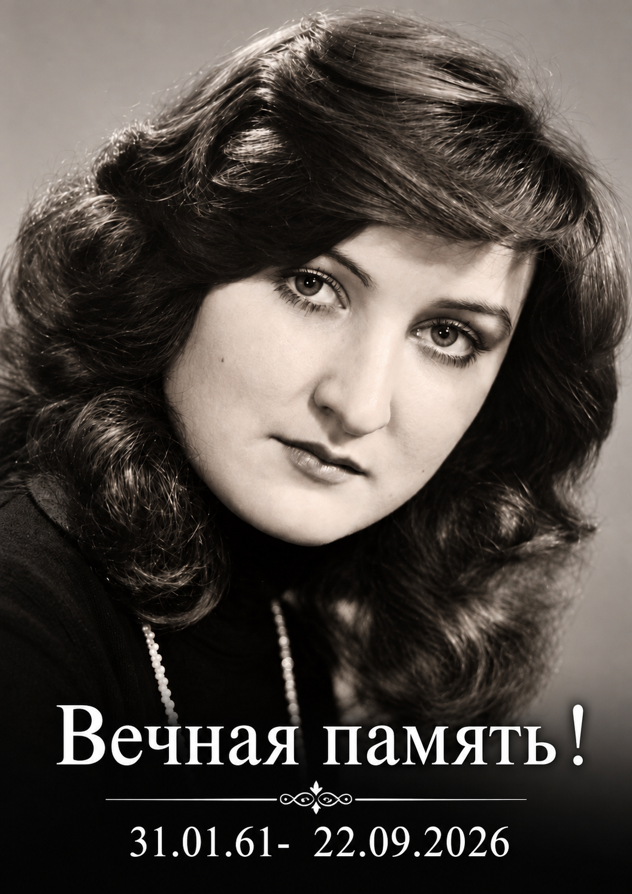

Начало профессионального пути
Инженер в Казахском отделении ЦНИИ «Проектстальконструкция». Первая запись датирована 30 сентября 1983 года.

Тамара НиколаевнаСОХРАНИТЬ ПАМЯТЬ. ПОНЯТЬ ИСТОРИЮ.01 / ПАМЯТЬ О МАМЕ
Сухорукова
Тамара Николаевна
31 января 1961 — 22 сентября 2026
Мама. Бабушка. Архитектор.
Человек, который создавал дома
и наполнял их теплом.
Она умела создавать красоту —
в доме, в саду, в жизни близких.
ЖИЗНЬ, КОТОРАЯ БОЛЬШЕ ДАТ
Тамара Николаевна была архитектором. Она проектировала дома, вкладывая в свою работу опыт, внимание и заботу о людях, которые будут в них жить.
Для сына она была самым лучшим поваром. Она сама шила красивую, модную одежду, занималась огородом и теплицей, ухаживала за садом возле дома. Любовь к семье жила в её повседневных делах.
Она очень сильно любила сына и внуков. Здесь сохраняется память о ней — не только о последних неделях её жизни, но прежде всего о человеке, которого любят и помнят.
Рассказ составлен по воспоминаниям Даниила, её сына.АРХИТЕКТУРНОЕ НАСЛЕДИЕ
Тамара Николаевна Сухорукова была ведущим архитектором при проектировании кафедрального собора Христа Спасителя в Калининграде.
По воспоминаниям её сына, Даниила Сухорукова.
Официальный сайт собора ↗АРХИТЕКТУРНОЕ НАСЛЕДИЕ
Тамара Николаевна Сухорукова была ведущим архитектором при проектировании торгового центра «Мега Маркет» в Калининграде.
Торговый центр расположен по адресу: Калининград, улица Уральская, 18.
Сведения об участии в проектировании — по воспоминаниям её сына, Даниила Сухорукова. Название и адрес торгового центра указаны на официальном сайте комплекса.ПРОФЕССИОНАЛЬНЫЙ ПУТЬ · СЕМЕЙНЫЙ АРХИВ
От инженера до главного архитектора проекта. Записи трудовой книжки Тамары Николаевны сохраняют историю её работы с 1983 по 2021 год.
На титульном листе указаны высшее образование и специальность «архитектор». За строками о приёмах и переводах — десятилетия профессиональной жизни, которую мы бережно сохраняем в памяти.
Диапазон дат описывает представленные записи, а не рассчитанный непрерывный трудовой стаж. Сведений о работе после мая 2021 года в этих фотографиях нет.
Инженер в Казахском отделении ЦНИИ «Проектстальконструкция». Первая запись датирована 30 сентября 1983 года.
НПО «Казавтотранстехника»: приём архитектором 3-й категории в 1988 году, перевод на должность архитектора I категории в 1992 году.
Работа архитектором в товариществе с ограниченной ответственностью. Название на фотографии частично закрыто печатью.
Приём архитектором в марте 1997 года; с октября 1999 года — ведущий архитектор.
Работа архитектором. Дата приёма 12 сентября 2001 года приведена по исправленной записи и приказу.
В ноябре 2003 года принята архитектором в «АР-ДЕКО», в ноябре 2004 года переведена ведущим архитектором в «Студию архитектуры 400».
Ведущий архитектор в фирме «Горбач и …». Последняя буква в названии на снимке неразборчива.
Последовательная работа ведущим архитектором: «Грин» с июля 2010 года, «Регион Проект» с января 2011 года.
Ведущий архитектор с 10 января 2012 года. 12 мая 2021 года переведена на должность главного архитектора проекта. Последняя представленная запись — увольнение 17 мая 2021 года.
Расшифровка выполнена по фотографиям. Переносы слов объединены, сокращения в названиях должностей по возможности раскрыты. Неуверенное чтение и исправления отмечены отдельно. Подписи и закрытые печатями фрагменты не восстановлены догадками.
Принята на должность инженера в ОИС 2.
Основание: Пр. № 58-к от 30.09.83 г.
Аббревиатура подразделения читается как «ОИС 2», требует сверки.
Открыть фотографию записи ↓Уволена в связи с переводом мужа в другую местность.
Основание: Пр. 27-к от 07.05.86 г.
Под текстом заметны слабые карандашные пометы; подпись старшего инспектора отдела кадров неразборчива.
Открыть фотографию записи ↓Принята в отдел № 2 на должность архитектора 3-й категории.
Основание: Приказ № 60 от 20.06.1988 г.
Полное название отдела перед словами «отдел № 2» неуверенно читается как «отдел генерального обеспечения»; в краткой записи не раскрыто.
Открыть фотографию записи ↓Переведена на должность архитектора I категории [часть строки неразборчива].
Основание: Приказ № 9 от 17.01.1992 г.
Видны зачёркивания в названии должности; окончание строки перекрыто печатью.
Открыть фотографию записи ↓Уволена по собственному желанию, ст. 32 КЗоТ Республики Казахстан.
Основание: Приказ № 76 от 19.08.1993 г.
Подпись начальника отдела кадров читается не полностью.
Открыть фотографию записи ↓Принята на должность архитектора.
Основание: Приказ № 54 от 26.08.1993 г.
Наименование организации перекрыто печатью; в заголовке — «Товарищество с ограниченной ответственностью».
Открыть фотографию записи ↓Уволена с работы по собственному желанию по ст. 31 КЗоТ Российской Федерации.
Основание: Приказ № 23 от 25.02.1997 г.
Часть формулировки под печатью; дата и основание читаются.
Открыть фотографию записи ↓Принята на должность архитектора.
Основание: Приказ № 1 от 03.03.1997 г.
Название также присутствует в строке подписи директора.
Открыть фотографию записи ↓Уволена с работы по собственному желанию по ст. 31 КЗоТ РФ.
Основание: Приказ № 7 от 05.10.99 г.
Подпись директора, часть фамилии перекрыта печатью.
Открыть фотографию записи ↓Принята на должность ведущего архитектора.
Основание: Приказ № 8 от 12.10.99 г.
Организация определяется по подписи и печати на развороте.
Открыть фотографию записи ↓Уволена с работы по собственному желанию по ст. 31 [часть обозначения кодекса неразборчива].
Основание: Приказ № 13 от 10.09.2001 г.
Печать закрывает часть текста.
Открыть фотографию записи ↓Принять на должность архитектора в ООО «Стройторгинвест».
Основание: Пр. № 5-ок от 12.09.2001 г.
Сверху видна зачёркнутая дата 02.12.2002 и повторённый номер 12; рядом удостоверяющая помета читается не полностью. Для хронологии использована исправленная дата и дата приказа.
Открыть фотографию записи ↓Уволена с работы по собственному желанию, ст. 80 Трудового кодекса Российской Федерации.
Основание: Приказ № 2 от 03.11.2003 г.
Правовая ссылка воспроизведена из книжки, без правовой оценки. Под строкой есть слабые пометы.
Открыть фотографию записи ↓Принята на должность архитектора.
Основание: Приказ № 10 от 21.11.2003 г.
Название работодателя в рукописной строке бледное; также читается на печати.
Открыть фотографию записи ↓Уволена в связи с переводом в Общество с ограниченной ответственностью «Студия архитектуры 400», пункт 5 статьи 77 Трудового кодекса Российской Федерации.
Основание: Приказ № 4-р(а) от 30 сентября 2004 года.
Часть названия получателя закрыта печатью; оно читается в следующей записи. Дата приказа приведена как на фотографии и отличается от месяца увольнения.
Открыть фотографию записи ↓Принята переводом из общества с ограниченной ответственностью «АР-Деко» на должность ведущего архитектора.
Основание: Приказ № 04 от 01 ноября 2004 года.
Название организации записано над текстом приёма.
Открыть фотографию записи ↓Уволена по собственному желанию, статья 77 пункт 3 Трудового кодекса Российской Федерации.
Основание: Приказ № 1-р от 03 марта 2006 года.
Подпись директора: Копылов О. В. [чтение фамилии неуверенное].
Открыть фотографию записи ↓Принята на должность ведущего архитектора.
Основание: Пр. № 5 (приказ) от 06.03.2006 г.
Последняя буква в названии фирмы неразборчива; на следующем развороте также имеется её печать.
Открыть фотографию записи ↓Трудовой договор расторгнут по инициативе работника, пункт 3 части первой статьи 77 Трудового кодекса Российской Федерации.
Основание: Приказ от 11.06.2010 г. № 25.
Ниже — подпись генерального директора и печать.
Открыть фотографию записи ↓Принята на должность ведущего архитектора.
Основание: Приказ № 34 от 01.07.2010 г.
В заголовке: «Общество с ограниченной ответственностью „Грин“ (ООО „Грин“)».
Открыть фотографию записи ↓Уволена по собственному желанию, пункт 3 части первой статьи 77 Трудового кодекса Российской Федерации.
Основание: Приказ № 60 от 31.12.2010 г.
Окончание записи находится вверху следующего разворота, стр. 16–17.
Открыть фотографию записи ↓Принята на постоянную работу на должность ведущего архитектора.
Основание: Пр. № 01 от 11.01.11.
Наименование подтверждается печатью.
Открыть фотографию записи ↓Уволена по собственному желанию по ст. [номер закрыт печатью] РФ.
Основание: Пр. № 04 от 30.12.11.
Дата записи читается как 01.01.2012. Подпись генерального директора частично неразборчива.
Открыть фотографию записи ↓Принята на должность ведущего архитектора.
Основание: Приказ № 1-к от 10.01.2012 г.
Запись размещена на странице с печатным заголовком «Сведения о награждениях», но по содержанию относится к работе.
Открыть фотографию записи ↓Переведена на должность главного архитектора проекта.
Основание: Приказ № 5-к от 11.05.2021 г.
Дата перевода и дата приказа различаются на один день, как в оригинале.
Открыть фотографию записи ↓Уволена по собственному желанию, пункт 3 части первой статьи 77 Трудового кодекса Российской Федерации.
Основание: Приказ № 6-к от 12.05.2021 г.
Ниже — подпись генерального директора и печать. Фамилия в подписи читается неуверенно.
Открыть фотографию записи ↓10 уникальных фотографий из 11 присланных: два снимка титульного листа совпадают. Изображения повёрнуты для удобства чтения. Нажмите, чтобы увеличить.
Источник: фотографии трудовой книжки, предоставленные Даниилом 19 октября 2026 года. Юридические основания увольнений воспроизведены как записи документа; их правовая оценка здесь не проводится.
02 / ИСТОРИЯ БОЛЕЗНИ
Август — сентябрь 2026 года. Хронология обращений за помощью, обследований и вмешательств, восстановленная по сообщениям сына.
ДИАГНОЗ В ПЕРЕСКАЗЕ РЕЗУЛЬТАТА БИОПСИИ
Сообщены некроз и выраженное воспаление. Код, указанный в семейной переписке: C24.1. G3 характеризует степень дифференцировки опухоли и не означает автоматически III стадию. Стадия TNM по имеющимся здесь сведениям не установлена.
ВОПРОСЫ СЕМЬИ
Эти вопросы требуют изучения истории болезни специалистами. Само наличие вопроса не доказывает нарушение или причинную связь со смертью.
Нужны динамика билирубина, протокол ЭРХПГ, данные о положении и проходимости стента, оттоке по дренажу, инфекции и функции печени. Отдельно — оценка дренирования правой и левой долей по оригиналу МРХПГ.
Нужно установить время готовности результата биопсии и ознакомления врачей, содержание консилиума, показатели МНО/ПВ, АЧТВ, фибриногена и тромбоцитов, а также проведённую коррекцию нарушений перед каждым вмешательством.
Нужны оба операционных протокола, показания к экстренности, анестезиологические карты, сведения о кровопотере, гемотрансфузиях и послеоперационном ведении. По длине разреза и количеству трубок нельзя надёжно восстановить выполненную операцию.
Семья просит установить, оценивались ли повторная ЭРХПГ, ревизия или замена стента, иные способы дренирования и перевод. Возможность каждого метода в конкретный момент зависит от анатомии, состояния пациентки, противопоказаний и доступной помощи.
Даниил сообщил о письменном отказе мамы от открытой операции и просьбе о переводе, а позднее — об обсуждении открытого вмешательства. Нужно сверить даты, содержание всех форм согласия и отказа и объяснение рисков с фактически выполненными вмешательствами.
Со слов сына, врачи позднее говорили о метастазах в левой доле печени и нарушении свёртывания. Эти сведения здесь не подтверждены первичными документами. Необходимы лучевые исследования, гистология, итоговый эпикриз и патологоанатомическое заключение, если вскрытие проводилось.
АРХИВ ДОКАЗАТЕЛЬСТВ
Перечень показывает, какие первичные материалы нужны для полноценного разбора. Сканов в этой версии пока нет.
03 / АКТУАЛЬНАЯ ИНФОРМАЦИЯ О ЛЕЧЕНИИ
Опухоли большого дуоденального сосочка и механическая желтуха: что описывают профильные клиники Москвы и Санкт-Петербурга.
Подборка обновляется вручную. Дата проверки не означает, что все публикации выпущены в 2026 году.
Эндоскопическое удаление доброкачественной аденомы нельзя автоматически считать подходящим лечением инвазивной карциномы G3. Решение зависит от гистологии, распространённости опухоли, состояния пациента и оценки профильной команды. Источник: НМИЦ им. А. В. Вишневского ↗
КАК ВЫБИРАЮТ ТАКТИКУ
Уточняют гистологию и распространённость опухоли. Для оценки опухолей ампулы ESGE рекомендует эндосонографию и МРХПГ.
Рекомендации ESGE, 2021 ↗При показаниях рассматривают стентирование или дренирование. Эти вмешательства могут устранить обструкцию, но сами по себе не удаляют опухоль.
Материал ГКБ № 29 ↗Для подходящих аденом возможна папиллэктомия. При операбельном инвазивном раке рассматривают панкреатодуоденальную резекцию; возможность операции оценивается индивидуально.
Подходы к лечению ↗Нет универсального правила для всех пациентов. ESGE не рекомендует рутинное предоперационное дренирование при любой злокачественной внепечёночной обструкции. Оно рассматривается, в частности, при холангите, выраженной симптомной желтухе, задержке операции или перед неоадъювантной химиотерапией у пациента с желтухой. Число билирубина само по себе не определяет всю тактику. ESGE: руководство, обновлённое в 2017 году ↗
Эта общая информация не позволяет ретроспективно установить правильность действий в конкретном случае без первичных документов.
МОСКВА И САНКТ-ПЕТЕРБУРГ
МОСКВА · ФЕДЕРАЛЬНЫЙ ЦЕНТР
В материале от 13 января 2023 года специалисты объясняют выбор между эндоскопической папиллэктомией и панкреатодуоденальной резекцией. Отдельно разбираются распространение опухоли и выявление раковых клеток.
Два подхода к лечению аденомы БДС ↗МОСКВА · ГОРОДСКАЯ БОЛЬНИЦА
Официальная страница описывает наружное и наружно-внутреннее дренирование, метод «Рандеву» и антеградное стентирование. Рассматриваются показания, ограничения и этапы вмешательств; опубликованы медицинские изображения.
Чрескожные вмешательства на протоках ↗САНКТ-ПЕТЕРБУРГ · УНИВЕРСИТЕТСКАЯ КЛИНИКА
Материал о механической желтухе: диагностика, ЭРХПГ, чрескожное дренирование и этапность лечения. Объясняется, почему при выборе вмешательства важны тяжесть состояния и нарушения свёртывания.
Механическая желтуха: обзор клиники ↗САНКТ-ПЕТЕРБУРГ · ЧАСТНЫЙ ЦЕНТР
Официальное описание панкреатодуоденальной резекции включает опухоли БДС в перечень показаний. Возможность операции определяется после обследования и консилиума. Представлены подготовка, ход операции и восстановление.
Панкреатодуоденальная резекция ↗Это подборка профильных материалов, а не рейтинг клиник. Возможность лечения конкретного пациента и условия госпитализации нужно уточнять в выбранном учреждении.
ВИЗУАЛЬНЫЕ МАТЕРИАЛЫ
Иллюстрации ниже взяты с официальных страниц. Они не относятся к лечению Тамары Николаевны. Нажмите на изображение, чтобы увеличить.
Выписки и протоколы операций; оригиналы КТ/МРТ в формате DICOM; заключения и препараты биопсии для пересмотра; анализы в динамике; протокол установки стента и сведения о дренажах. Полный комплект позволяет специалистам обсуждать конкретный случай, а не только общие методы.
ЛИЧНОЕ СВИДЕТЕЛЬСТВО
Сухоруков Даниил Игоревич. Полный текст предоставленного документа с хронологией, реестром и визуальными приложениями.
Скачать оригинал Word ↓В Следственное управление
Следственного комитета Российской Федерации
по Калининградской области
Свидетель: Сухоруков Даниил Игоревич
сын Сухоруковой Тамары Николаевны, 31.01.1961 г.р.
адрес: ______________________________
телефон: ____________________________
e-mail: _____________________________
№ материала проверки: ______________
по обстоятельствам заболевания, оказания медицинской помощи, хирургических вмешательств и последующей смерти Сухоруковой Тамары Николаевны
Полная хронологическая версия с приложением электронной переписки, медицинских документов, аудиозаписей и журналов звонков
Настоящий документ является проектом показаний, составленным по моим сообщениям, сохранённой переписке, журналам вызовов и имеющимся у меня медицинским документам. В официальном протоколе допроса прошу фиксировать только те сведения, которые я подтверждаю лично либо могу подтвердить оригиналами документов и электронных материалов.
Я специально разделяю: (1) то, что видел и слышал лично; (2) то, что мне непосредственно сообщала мать; (3) то, что мне сообщали врачи; (4) сведения из документов и электронной переписки. Медицинские выводы, точный объём операций, причинно-следственная связь и правовая оценка должны устанавливаться по первичной медицинской документации и экспертизе.
Дата/период | Событие |
10.08.2026 | Вызов скорой помощи; со слов матери, ей сообщили о проблеме с печенью, сделали инъекцию. |
11.08.2026 | Госпитализация в Зеленоградске; УЗИ: расширенные желчные протоки; инфузионная терапия. |
13.08.2026 | Лабораторные признаки выраженного холестаза/желтухи: билирубин 202,49 мкмоль/л и др. |
15.08.2026 | Самостоятельно оплаченные ФГДС и МРХПГ; образование БДС 2,0×1,5×2,6 см, выраженное расширение желчных протоков. |
16–17.08.2026 | Обращения за специализированной помощью; с 17.08 — 1-е хирургическое отделение Областной больницы. |
18.08.2026 | ЭГДС/биопсия: 2 фрагмента. Позднее патология: дуоденит, признаки папиллита; опухолевая ткань в заключении не описана. |
19.08.2026 | КТ с контрастированием; по моим сведениям, в этот период установлен наружный дренаж желчного пузыря (точную дату подтвердить документами). |
26.08.2026 | Фистулография: блок нижней трети общего желчного протока, контраст в ДПК не поступает. |
31.08.2026 | Билирубин около 400–430 по сообщениям; заявление пациентки главврачу, вопрос о переводе, отсутствие консультации гастроэнтеролога; отдельное письменное обращение по детоксикационной терапии. |
01–04.09.2026 | После заявления обсуждение открытой операции; поиск независимой помощи, консультация эндоскописта в Калининграде, связь с Санкт-Петербургом, отправка документов. |
08.09.2026 | Эндоскопическое стентирование желчных путей и повторная биопсия БДС. |
14–16.09.2026 | По переписке билирубин снизился, желчь стала поступать через кишечник; 16.09 — осмотр гастроэнтеролога и контрольная МРХПГ. |
17.09.2026 | Утреннее обсуждение открытой операции; результат G3-карциномы; вопросы о консилиуме/онкологе; согласие матери; первая открытая операция. |
18–20.09.2026 | Послеоперационная переписка: большой шов, четыре прокола/выхода, вопрос матери о том, что именно ей сделали; 20.09 — УЗИ и бытовая переписка. |
20.09.2026, 19:26 | Последние подтверждённые сообщения матери в имеющемся скриншоте. |
21.09.2026 | Звонки в реанимацию; в 11:00 мне сообщили, что мать в сознании и дышит самостоятельно. |
22.09.2026 | Около 14:09 — попытка дозвониться в реанимацию без ответа. |
23.09.2026 | Телефонное сообщение о смерти; поездка в больницу; разговор с врачом записан на аудио. |
Я являюсь сыном Сухоруковой Тамары Николаевны, 31 января 1961 года рождения. В августе–сентябре 2026 года я постоянно участвовал в организации её медицинской помощи: посещал мать, разговаривал с врачами и заведующим отделением, получал и изучал медицинские документы, обращался к руководству больницы и в другие учреждения, связывался с врачами в Калининграде и Санкт-Петербурге и ежедневно переписывался с матерью.
Оригиналы переписки, журнал телефонных вызовов, фотографии медицинских документов и аудиозаписи у меня сохранены. Телефон и исходные файлы готов предоставить для процессуального осмотра.
10 августа 2026 года состояние матери ухудшилось, была вызвана скорая помощь. Со слов матери, сотрудники сообщили, что проблема связана с печенью, сделали ей инъекцию и уехали.
11 августа мать самостоятельно обратилась в больницу г. Зеленоградска и была госпитализирована. Со слов матери и из её последующего письменного заявления мне известно, что по УЗИ выявили расширение желчных протоков. Проводилась инфузионная терапия, в том числе Гептралом и Реамберином.
По анализам от 13 августа, с которыми я позднее ознакомился, общий билирубин составлял 202,49 мкмоль/л, прямой 129,78 мкмоль/л, АЛТ 377,3 Ед/л, АСТ 146,1 Ед/л, щелочная фосфатаза 907 Ед/л, ГГТ около 555–556 Ед/л.
15 августа мать за собственные средства прошла ФГДС и МР-холангиопанкреатографию. В МРХПГ описано объёмное образование в области большого дуоденального сосочка размером около 2,0×1,5×2,6 см, субтотально облитерирующее просвет БДС; выраженное расширение правых и левых внутрипечёночных протоков и общего печёночного протока. Паренхима печени в этом исследовании описана как однородная, метастатические очаги в заключении не указаны.
Материалы: Приложение №91 — Сухорукова Тамара Николаевна. Протокол диагноста из РИС Медицинский документ №КККА-0000246683 от 15.08.2026.pdf
16 августа, насколько мне известно, мать обращалась за помощью в БСМП и затем в Областную клиническую больницу. 17 августа она была госпитализирована/переведена в 1-е хирургическое отделение Областной клинической больницы Калининградской области. Точные часы и маршрут прошу установить по документам.
18 августа была выполнена ЭГДС с биопсией области БДС — взято два фрагмента. Позднее я получил фото протокола патолого-анатомического исследования: материал взят 18.08.2026 в 12:32, зарегистрирован 18.08 в 13:51, вырезка выполнена в 15:14, два объекта. В микроскопическом описании указана слизистая тонкокишечного типа с воспалительными изменениями; заключение: «Дуоденит. Гистологические признаки слабо выраженного папиллита», код K29.8. Злокачественная опухоль в этом заключении не описана. По моим воспоминаниям, этот результат стал известен нам около 28 августа. Прошу установить точную дату выдачи/ознакомления и сопоставить материал первой биопсии с последующим исследованием.
Материалы: Приложение №53 — 28 авг биопсия.jpg
19 августа по КТ с контрастированием были описаны расширенные внутрипечёночные протоки, холедох до 18 мм и образование в области БДС около 16 мм. В виденном мной заключении патологические очаги накопления контраста в печени и патологически увеличенные лимфоузлы не описаны.
По моим сведениям, примерно 19 августа матери был установлен наружный дренаж через желчный пузырь (холецистостома); точную дату и протокол вмешательства прошу подтвердить первичной медицинской документацией. По наблюдениям семьи по дренажу могло отходить около 0,6 л желчи в сутки. Мать позднее неоднократно рассказывала мне, что пункционная процедура была для неё крайне болезненной и что обезболивание, по её ощущению, не успело подействовать.
26 августа была выполнена фистулография через холецистостому. По протоколу контрастировались желчный пузырь, правые и левые внутрипечёночные протоки, пузырный проток и общий желчный проток; в нижней трети общего желчного протока сохранялся блок, контраст в двенадцатиперстную кишку не поступал.
Несмотря на наружное дренирование, билирубин оставался крайне высоким. В анализах от 28 августа прямой билирубин был около 227,3 мкмоль/л, непрямой около 203,6 мкмоль/л. К концу августа матери и мне сообщали значения порядка 400 мкмоль/л.
Материалы: Приложение №3 — 1000147161.jpg; Приложение №5 — 1000147177.jpg; Приложение №12 — 1000147195.jpg; Приложение №13 — 1000147196.jpg; Приложение №14 — 1000147197.jpg; Приложение №15 — 1000147198.jpg; Приложение №16 — 1000147199.jpg; Приложение №17 — 1000147200.jpg; Приложение №18 — 1000147201.jpg
31 августа утром мать сообщила мне после обхода, что билирубин «не спадает» и что она слышала цифры примерно 420–430. Она также сообщила, что у неё спросили, где она прописана, и что обсуждается перевод в Зеленоградск, а гастроэнтеролог её «не хочет брать». Это я знаю из её сообщения; точные лабораторные значения и решения прошу сверить по истории болезни.
У меня имеется аудиозапись разговора, в котором звучит фраза примерно: «Сделаем УЗИ и будем решать вопрос о переводе вас в больницу г. Зеленоградска». Я идентифицирую говорящего как Селявина Н.П., однако прошу официально установить личность говорящего по записи.
Материалы: Приложение №90 — Стандартная запись 1.mp3
В тот же день мать подписала заявление на имя главного врача. В нём она описала историю с 10 августа, МРТ/ФГДС от 15 августа, отсутствие достаточного желчеоттока, рост билирубина примерно до 400, отсутствие консультации гастроэнтеролога, слова Селявина Н.П. о возможном переводе в Зеленоградск и просила провести консилиум, определить тактику, не переводить её в учреждение без необходимых возможностей и при необходимости организовать перевод в специализированный центр.
Материалы: Приложение №85 — Заявлние 31.августа.docx
Также у меня имеется фотография отдельного письменного обращения матери от 31 августа, где при билирубине «400+» она просила определить наличие показаний к экстракорпоральной детоксикации (плазмаферезу) либо иной терапии и, если необходимые методы недоступны, организовать перевод в специализированный центр. Я не утверждаю, что плазмаферез был ей обязательно показан; значение этого документа для меня в том, что пациентка письменно фиксировала ухудшение и просила оценить варианты лечения/перевода.
Материалы: Приложение №84 — заявление на плазмаферез.jpg
Я сам обращался к руководству больницы. По моим воспоминаниям, после того как я поднял вопрос о переводе, заведующий Куцый Сергей Владимирович сначала отрицал, что мать собираются переводить, и говорил, что она могла неправильно понять. Я включил ему аудиозапись. После этого разговор завершился без подробного обсуждения. Прошу проверить эти обстоятельства по показаниям участников.
Я также спрашивал хирурга Юдина Стояна Владимировича, почему при сохраняющемся высоком билирубине не устанавливают внутренний стент. По моим воспоминаниям, он говорил, что стентирование «опасно для жизни», а на мой вопрос, не опасен ли билирубин около 400, отвечал, что я не разбираюсь и врачи знают, что делать. Позднее, 8 сентября, стент всё же был установлен; прошу установить, какие медицинские обстоятельства изменились.
Я обращался и в гастроэнтерологическое отделение. По моим воспоминаниям, женщина — заведующая/врач гастроэнтеролог — объяснила, что проблема механическая, связана с желчными протоками и должна решаться хирургами; на мой вопрос о высоком билирубине сказала, что у них бывают пациенты с ещё более высокими значениями. Я передаю только содержание разговора по памяти и прошу установить личность врача и наличие официальной консультации.
1 сентября мать прислала мне сообщения о разговоре с заведующим. В 08:02 она написала, что заведующий подошёл к ней и сказал в смысле: «Ах так вы решили таким путём пойти». В 08:03 она написала: «Соберём консилиум и будем решать операцию открытым путём». В 08:04 она написала, что, по её впечатлению, ему «не понравилось, что мы пожаловались». Последняя фраза является именно субъективным восприятием матери; я не считаю её доказательством мотива.
Материалы: Приложение №92 — угрозы матери после заявления(1).jpg
В переписке того же периода мы обсуждали, какие документы ей дают подписывать. Мать писала, что бумаги на подпись дают уже «в операционной»/«на месте». Эти сообщения важны для последующей проверки того, когда и как ей разъяснялись риски и альтернативы конкретных вмешательств.
Материалы: Приложение №83 — выхода нет.jpg
В другой переписке мать жаловалась на резкий характер общения и писала, что не успевает включать диктофон, потому что сотрудники заходят внезапно. Я просил её фиксировать разговоры. Это не доказывает нарушения лечения, но показывает, почему мы пытались сохранять электронные доказательства.
Материалы: Приложение №86 — злость.jpg
2 сентября я лично консультировался с эндоскопистом Ныжником Леонидом Михайловичем. По моим воспоминаниям, после ознакомления с ситуацией он сказал, что необходима помощь в Санкт-Петербурге, и дал контакт профильного специалиста. В переписке с матерью я в тот же день писал, что Ныжник работает в Областной больнице и что, по моему пониманию после разговора, «нужно только в Питер». Точное содержание консультации должен подтвердить сам Ныжник.
Материалы: Приложение №87 — ныжник.jpg
В журнале телефона имеются звонки контакту «Melkov Vladimir Piter Endoskopist» и в Министерство здравоохранения. Я использовал предоставленный контакт для поиска возможности лечения в Санкт-Петербурге.
Материалы: Приложение №89 — связь с питером.jpg
3 сентября я направил медицинские документы в Санкт-Петербург. 4 сентября получил сообщение от администратора эндоскопического отделения о том, что документы переданы врачу и со мной свяжутся после получения ответа. Это подтверждает, что мы реально предпринимали действия для получения независимого профильного мнения.
Материалы: Приложение №54 — 3 сент отправка документов в питер(1).png
8 сентября матери было выполнено эндоскопическое вмешательство на желчных путях с установкой билиарного стента. В тот же день в 15:01 был взят новый биопсийный материал из области БДС; он поступил в патолого-анатомическое отделение 9 сентября в 14:58.
14 сентября мать написала после обхода, что ей сообщили: ранее билирубин был около 480, теперь около 320; хирург сказал, что быстро он не снизится. Эти значения я передаю как сообщение матери и прошу сверить по лабораторной системе.
Материалы: Приложение №48 — 14 сент обход упал билирубин.jpg
15–16 сентября, по переписке, у матери появился более выраженный отток желчи через кишечник. Она писала, что после обеда «вся желчь пошла через кишечник», а на обходе врач сказал, что «мы этого и добивались» и что после контрольного анализа возможен перевод в гастроэнтерологию. Я воспринимал это как признаки некоторого улучшения, но не могу по переписке оценить объективную тяжесть состояния.
Материалы: Приложение №55 — photo_2026-10-10_17-32-01.jpg; Приложение №56 — photo_2026-10-10_17-32-05.jpg
16 сентября мать сообщила, что к ней приходил гастроэнтеролог, выслушал жалобы на слабость и отсутствие аппетита, осмотрел вены и говорил, что плохое самочувствие связано с интоксикацией. Содержание консультации прошу сверить с официальной записью в истории болезни.
Материалы: Приложение №88 — осмотр гастроэнтеролога.jpg
16 сентября выполнена контрольная МРХПГ. По фотографии заключения, которую мать прислала мне, сохранялись расширенные желчные протоки левой доли; общий желчный проток около 11 мм со стентом, проксимальный конец которого описан в правом долевом протоке; сохранялся блок на уровне БДС. В самом заключении не было формулировки «левая доля печени не работает».
Материалы: Приложение №69 — photo_2026-10-11_20-39-03.jpg; Приложение №38 — 1000147241.jpg
Утром 17 сентября мать была со мной на связи. В 07:26–07:27 она писала, что пока чувствует себя нормально и ждёт обхода и объяснения результатов МРТ.
Материалы: Приложение №49 — 17 cентября 730.jpg
Около 08:25 мать сообщила, что врачи хотят «поставить стент в печень», потому что «левая часть якобы по МРТ не работает», и что якобы об этой операции уже говорили со мной. Она отдельно написала: «Опухоль они трогать не будут». В 08:37 она описала предполагаемый план как удаление ранее поставленного стента, удаление желчного пузыря и проведение трубки из протоков печени напрямую в кишечник.
Далее в переписке она сообщала, что сотрудники спрашивают, когда я приеду, и хотят сделать операцию в этот же день. Я отвечал, что не хочу торопиться, просил дождаться результатов гистологии и собрать консилиум.
В 09:38 мать написала, что у неё «голова плохо соображает». Я воспринимал это как выраженную физическую и эмоциональную усталость. В одном из сообщений она выражала крайнее отчаяние от длительного лечения и говорила, что больше не хочет мучиться; подробности этого сообщения я здесь не воспроизвожу, но оригинал сохранён в переписке.
Материалы: Приложение №21 — 1000147224.jpg; Приложение №22 — 1000147225.jpg; Приложение №23 — 1000147226.jpg; Приложение №24 — 1000147227.jpg; Приложение №25 — 1000147228.jpg; Приложение №26 — 1000147229.jpg; Приложение №27 — 1000147230.jpg; Приложение №28 — 1000147231.jpg; Приложение №29 — 1000147232.jpg; Приложение №30 — 1000147233.jpg; Приложение №31 — 1000147234.jpg; Приложение №32 — 1000147235.jpg; Приложение №33 — 1000147236.jpg; Приложение №34 — 1000147237.jpg; Приложение №35 — 1000147238.jpg; Приложение №36 — 1000147239.jpg; Приложение №37 — 1000147240.jpg; Приложение №39 — 1000147242.jpg; Приложение №40 — 1000147243.jpg; Приложение №41 — 1000147244.jpg; Приложение №42 — 1000147245.jpg; Приложение №43 — 1000147246.jpg; Приложение №44 — 1000147247.jpg; Приложение №45 — 1000147248.jpg; Приложение №46 — 1000147249.jpg
После того как мать прислала мне заключение МРХПГ от 16 сентября, я сам прочитал его и направил ей сообщение с моим пониманием документа и вопросами, которые, по моему мнению, нужно задать врачу. Я написал, что заключение не содержит слов о нефункционирующей левой доле, а содержит указание на холангиоэктазию левой доли и положение проксимального конца стента в правом долевом протоке. Я просил выяснить, может ли сохраняться недостаточный отток слева и возможно ли дополнительное эндоскопическое или чрескожное дренирование. Я не выдавал это за мнение лечащего врача; целью было добиться разъяснения альтернатив до большой операции.
Материалы: Приложение №73 — photo_2026-10-11_20-49-02.jpg; Приложение №70 — photo_2026-10-11_20-48-56.jpg; Приложение №71 — photo_2026-10-11_20-48-58.jpg
В 10:15 мать написала, что врач сказала, будто «сын не разбирается в этом» и поэтому так себя ведёт, и что меня сильно ждут. В 10:23 она написала, что предлагаемая операция — «единственный выход в данной ситуации».
Материалы: Приложение №72 — photo_2026-10-11_20-49-00.jpg; Приложение №73 — photo_2026-10-11_20-49-02.jpg
Около 10:27–10:36 мы обсуждали возможность дренирования левой системы. Мать отвечала, что не хочет нового прокола, потому что это очень больно. В 11:13 она прямо написала, что не будет делать «стент в печень без наркоза», потому что предыдущая процедура была настолько болезненной, что она кричала. Для меня это показывает, что её отказ от пункционного варианта был связан прежде всего со страхом повторения сильной боли, а не с отказом от лечения вообще.
Материалы: Приложение №76 — photo_2026-10-11_21-10-33.jpg; Приложение №75 — photo_2026-10-11_20-51-45.jpg; Приложение №45 — 1000147248.jpg
В 10:36 мать передала мне слова Куцего С.В. примерно так: он якобы ранее предлагал мне эту операцию, я отказался, стент «не помог», ничего не помогло, а теперь я снова «диктую врачам, что делать», хотя мало в этом разбираюсь. Сразу после этого мать написала: «Пусть делают» и «Я согласна». Я этого разговора Куцего с матерью лично не слышал и передаю его только как содержание её сообщения.
Материалы: Приложение №72 — photo_2026-10-11_20-49-00.jpg; Приложение №9 — 1000147191.jpg
В 10:38–10:39 мать поясняла, что ей ранее предлагали «вырезать желчный, вырезать проток, взять гистологию, пришить печень и кишечник вместе». В 10:45 она всё ещё писала: «Аденому они не могут сейчас удалять так как нет биопсии». В 10:46 снова описала операцию как проведение трубки из печени в кишечник. То есть в её понимании непосредственно перед операцией опухоль не должна была удаляться.
Материалы: Приложение №74 — photo_2026-10-11_20-51-43.jpg; Приложение №75 — photo_2026-10-11_20-51-45.jpg
В 11:45 я позвонил Владимиру Мелкову — эндоскописту в Санкт-Петербурге, с которым ранее уже разговаривал и которому была известна история болезни матери. По моему пониманию, он был готов рассмотреть возможность нашего приезда. В этот момент дозвониться не удалось: он не взял трубку. В журнале телефона этот исходящий звонок сохранён. Точные ФИО и должность специалиста прошу при необходимости установить по номеру и переписке.
Материалы: Приложение №47 — 1000147250.jpg; Приложение №89 — связь с питером.jpg
После приезда я зашёл к матери в палату. Она повторила примерно то же, что писала: врачи считают открытую операцию единственным вариантом, всё предыдущее не помогает, стент работает недостаточно, «левая доля не работает», нужно соединить желчные пути/печень с кишечником, а опухоль трогать не будут, потому что «нет биопсии». Она была очень уставшей и говорила, что хочет, чтобы наконец всё закончилось и она смогла отдохнуть.
Я предлагал ей отказаться от срочной операции и ехать в Санкт-Петербург. Я говорил, что после большой операции она может уже не иметь возможности быстро уехать. Она ответила, что я в этом не разбираюсь и врачам лучше знать, что делать.
Я пошёл к врачу и спросил, какую именно операцию собираются делать. Мне объяснили примерно так же, как до этого передавала мать: установить/провести трубку для отвода желчи из печени в кишечник. Я спросил, зачем при этом удалять желчный пузырь, поскольку в нём уже стоял наружный дренаж и желчь уходила в пакет. Врач ответила, что желчный пузырь в будущем может воспалиться и его всё равно придётся удалять, поэтому лучше удалить сейчас; это, по её словам, простая операция. Я возражал, что сейчас пузырь дренируется, но мне повторили, что его нужно удалить.
После этого я подошёл к заведующему 1-м хирургическим отделением Куцему Сергею Владимировичу. Он объяснил предполагаемое вмешательство в целом аналогично и передал мне результат повторной биопсии, сказав, что, по его словам, результат был получен этим утром.
В протоколе №60843 указано: материал взят 08.09.2026 в 15:01; поступил/зарегистрирован 09.09.2026 в 14:58; регистрационный номер 1.2026.14098; категория сложности 5; вырезка проводилась 17.09.2026 в 09:48, в проводку взято 2 объекта. Заключение: злокачественное новообразование ампулы Фатерова сосочка, инвазивная карцинома низкой степени дифференцировки G3 с некрозом и выраженным воспалением, C24.1; врач-патологоанатом Горх П.И.
Я понимаю, что отметка «вырезка 09:48» не равна времени окончательного подписания заключения. Поэтому прошу по электронным логам установить точное время готовности результата и время ознакомления с ним лечащего врача, заведующего и онколога.
Материалы: Приложение №50 — 17 сент биопсия.jpg
После изучения биопсии мы с врачом сели в коридоре. Я спросил: сегодня утром стало известно, что у матери злокачественная опухоль; собирали ли консилиум, знает ли онколог, что собираются делать, какие риски и варианты существуют. Врач спросила меня: «Вы отказываетесь от операции?» Я ответил, что не отказываюсь и хочу понять риски, альтернативы, был ли консилиум и знает ли онколог.
В этот момент по коридору шёл Куцый С.В. Врач подошла к нему и при мне спросила примерно: «Ну что, будем проводить консилиум? Тут надо консилиум провести». Куцый ответил, что будут, и добавил, что позовут онколога. Этот разговор я слышал лично. Я не могу утверждать, что до этого вообще не было никакого совещания; прошу проверить документально, был ли оформлен консилиум до моего вопроса, в какое время и кто участвовал.
После этого я снова пошёл к матери, предлагал ей уехать в Санкт-Петербург и не спешить. Она сказала примерно: «Данил, я согласна, я не хочу больше это всё терпеть, у меня уже нет сил, пусть делают». Я сообщил врачу, что мы согласны на операцию. Врач ответила: сейчас подойдёт онколог, будем с ним разговаривать. Я сказал: хорошо, ждём.
Я вернулся в палату. Через некоторое время врач вошла с бумагами и сказала подписывать согласие на операцию. Я спросил, почему сейчас, если мы договорились дождаться онколога. Врач вновь резко спросила: «Вы отказ от операции?» Я ответил, что мы не отказываемся, а хотим услышать мнение онколога. После этого она развернулась и вышла. Я передаю этот эпизод как лично услышанный разговор.
Через некоторое время в палату вошли онколог, Куцый Сергей Владимирович, врач и ещё несколько медицинских работников. Меня попросили выйти. Я сидел в коридоре; когда попытался открыть дверь и войти, мне сказали закрыть дверь и не заходить. Содержание разговора я не слышал.
Затем мать отвели в перевязочную; меня туда также не пустили. Позднее мне сказали, что я могу её забирать. Я подошёл и увидел, что мама плачет, на лице были слёзы. Я спросил, почему. Она ответила, что думала, будто ей снова будут прокалывать живот и вставлять иглы, как раньше, а это было очень больно; она не хотела снова это терпеть и сказала, что теперь согласна на предлагаемое вмешательство. Я понял, что страх повторного болезненного пункционного вмешательства существенно влиял на её выбор.
Я не слышал, что именно врачи сказали ей в палате и перевязочной, и не утверждаю, что её принуждали. Прошу установить, какие альтернативы были ей разъяснены, обсуждалась ли возможность пункционного дренирования при адекватном обезболивании/седации и на какой конкретный объём операции она подписала согласие.
После этого я довёл мать до операционного блока, мы попрощались, и я остался ждать в коридоре. Примерно через три часа двери операционного блока открылись. Из блока вышла женщина и стала громко спрашивать примерно: «Заберите барышню! Куда будем барышню класть?» Ей ответили, что кровать находится возле операционного блока. Мать переложили/поместили на эту кровать и повезли в обычную палату.
Когда я увидел мать, она была в сознании, разговаривала, но ей было очень плохо и очень больно. Она многократно говорила: «Больно, больно» и просила обезболивание. Я держал её за руку, ходил по отделению и просил сотрудников сделать обезболивающее. По моим ощущениям, примерно около 30 минут к ней никто не подходил с обезболивающим. Затем пришла женщина, сделала укол, после чего матери стало легче. Мы немного поговорили; она сказала, что сил нет и хочет спать. После этого я уехал домой.
Я лично не видел, чтобы после выхода из операционного блока мать находилась в реанимации или палате пробуждения. Я не могу утверждать, где она находилась между окончанием операции и моментом, когда я её увидел. Прошу установить это по анестезиологической карте и листам наблюдения.
18 сентября утром мать переписывалась со мной. В более ранних сообщениях она написала «Доброе утро», «У меня всё нормально», «Жду обход врачей» и что накануне не смогла писать. Позднее около 10:28 я спросил, делали ли перевязку; она ответила, что да. Я спросил про размер шва. Мать написала: «Шов большой сказала больше 10 см» и «И 4 прокола сбоку».
Материалы: Приложение №77 — photo_2026-10-19_16-20-48.jpg
В 10:33 мать спросила меня: «Что они делали то?» Я ответил: «Не знаю». Она написала в смысле, что всё остаётся «на словах». Я ответил, что спрошу позже, что именно сделали. Для меня это означает, что на утро после операции ни у меня, ни, судя по её собственному вопросу, у неё не было ясного понимания точного объёма вмешательства.
Материалы: Приложение №78 — photo_2026-10-19_16-32-50.jpg
Позже, когда я видел мать после операции, я обращал внимание на большой вертикальный срединный разрез верхней части живота, несколько отдельных мест проколов/выходов и множество трубок, соединённых с мешками, а также трубку через нос. По моему визуальному подсчёту наружных трубок было около пяти–шести. Я не знаю назначения каждой и не делаю по внешнему виду вывод о точном названии операции.
20 сентября в 06:19 мать написала, что её «потаскали без бандажа по УЗИ», и попросила меня приехать пораньше. В 06:27 попросила купить подгузники №3 и две бутылки воды. Эти сообщения показывают, что утром она самостоятельно пользовалась телефоном и формулировала бытовые просьбы. Я не делаю из этого вывода о медицинской стабильности.
Материалы: Приложение №79 — photo_2026-10-19_16-39-42.jpg
Вечером 20 сентября она прислала фотографии растений и спрашивала, что растёт в огороде. В 19:26 в имеющемся скриншоте от неё видны сообщения «Ясно» и «Ещё есть остались помидоры». Поэтому последним подтверждённым временем её сообщений в представленном фрагменте является 19:26, а не 19:14. После этого я не получил от неё обычного продолжения общения.
Материалы: Приложение №80 — photo_2026-10-19_16-41-53(2).jpg; Приложение №51 — 1790199678807.jpeg
21 сентября в 09:44 я звонил в реанимацию по телефону 57-85-73, но трубку не взяли. В 11:00 позвонил снова; журнал телефона фиксирует разговор продолжительностью 54 секунды. Трубку взяла женщина. Я назвал фамилию матери и спросил, что происходит. Мне сообщили примерно: «Всё нормально, она в сознании, она дышит сама». Я спросил, почему она в реанимации и что ей делают. Мне ответили: «Всё в порядке, всё под контролем, не переживайте». Я спросил, можно ли приехать; мне ответили, что нельзя, после чего разговор закончился.
Я не знаю, кто именно разговаривал со мной, и не могу по телефону оценить реальное медицинское состояние. Прошу установить сотрудника и сопоставить сказанное мне с объективными записями реанимации на 11:00.
22 сентября примерно в 14:09 я снова звонил по этому номеру, но трубку никто не взял. В журнале вызовов этот исходящий звонок виден.
Материалы: Приложение №81 — photo_2026-10-19_16-48-37.jpg
23 сентября мне позвонили с номера +7 909 794-32-24 и сообщили, что моя мама умерла в реанимации. В журнале телефона видны входящие соединения с этим номером в 07:22 (4 мин. 4 сек.) и 08:15 (4 мин. 40 сек.), а также пропущенный звонок в 08:02 и мой исходящий звонок в 08:06. Прошу установить, кто пользовался этим номером и во время какого соединения мне сообщили о смерти.
Материалы: Приложение №82 — photo_2026-10-19_16-55-44.jpg
Я отдельно подчёркиваю: 23 сентября — это дата, когда мне сообщили о смерти по телефону. Точную дату и время наступления смерти прошу установить по медицинским документам. В иных материалах семьи фигурировала дата 22.09.2026, поэтому дату уведомления нельзя автоматически считать датой смерти.
В этот же день я приехал в больницу забрать личные вещи матери и поговорить с врачом. Разговор я записал на телефон; оригинальный файл «2026-09-23_10'49'56'.mp3» сохранён и приложен.
По содержанию разговора, которое прошу проверять по самому аудиофайлу и официальной расшифровке, врач объяснял, что после первого вмешательства возникло кровотечение в области опухоли/БДС, потребовавшее повторной операции. Также обсуждалась плохая свёртываемость крови, которую врач связывал в том числе с длительно высоким билирубином. Из разговора я понял, что повторное вмешательство было более объёмным и затрагивало опухоль/БДС, двенадцатиперстную кишку и желчный проток. Я не присутствовал на операции и не могу сам определить её точное название и объём.
Прошу не ограничиваться моим пересказом: аудиозапись должна быть процессуально осмотрена, дословно расшифрована с таймкодами, должна быть установлена личность врача, а его объяснения сопоставлены с операционными протоколами, коагулограммами, данными реанимации и патолого-анатомическими документами.
Материалы: Приложение №52 — 2026-09-23_10'49'56'.mp3
После смерти мне сообщали, что в левой доле печени были обнаружены метастазы. На момент составления этих показаний я не считаю установленным, каким именно первичным документом это подтверждено. В МРХПГ 15 августа, КТ 19 августа и известном мне заключении МРХПГ 16 сентября метастазы в печени не были описаны. Я не утверждаю, что они возникли из-за медицинских вмешательств: они могли быть микроскопическими и ранее не визуализироваться. Прошу установить, когда и каким исследованием они были объективно выявлены.
Лично подтверждаю: мои разговоры с врачами и Куцым С.В.; получение от Куцего результата G3-карциномы перед операцией; вопрос о консилиуме и онкологе; повторяющийся вопрос врача «Вы отказываетесь от операции?»; приход группы врачей и мой недопуск в палату; состояние матери после перевязочной; сопровождение до операционной; её выраженную послеоперационную боль и мои просьбы об обезболивании; её послеоперационную переписку; мои звонки в реанимацию и содержание разговора 21 сентября; уведомление о смерти 23 сентября; разговор с врачом после смерти, записанный на аудио.
Со слов матери мне известно: что врачи говорили о «неработающей» левой доле; что открытую операцию представляли как единственный выход; что Куцый говорил ей о моём прежнем отказе и о том, что я «диктую врачам»; что предыдущая пункция была крайне болезненной; что непосредственно перед операцией она считала, что опухоль трогать не будут и результата биопсии ещё нет.
По документам/переписке подтверждаются: образование БДС и двустороннее расширение протоков 15 августа; первая биопсия с заключением о дуодените/папиллите; сохраняющийся блок 26 августа; письменное заявление пациентки 31 августа; стентирование и повторная биопсия 8 сентября; G3-карцинома в протоколе №60843; сохраняющееся расширение левых протоков и положение стента по МРХПГ 16 сентября; многочисленные сообщения 17 сентября; журналы телефонных вызовов 21–23 сентября.
Не могу самостоятельно установить: точный объём первой и второй операций; точное время и источник кровотечения; наличие и степень коагулопатии до первой операции; техническую возможность конкретных способов дренирования; причину смерти; точную дату смерти; наличие причинной связи между отдельными действиями врачей и исходом. Эти вопросы должны устанавливаться по первичной документации и комиссионной экспертизе.
• Истребовать полную историю болезни, операционные протоколы обеих операций, журналы операционной, анестезиологические карты и реанимационные листы.
• Установить точное время получения и подписания результата патологии №60843 и время ознакомления с ним лечащего врача, Куцего С.В., онколога и членов операционной бригады.
• Истребовать протокол консилиума 17.09.2026 (если он проводился), установить время, участников и принятое решение; отдельно установить, когда фактически осмотрел пациентку онколог.
• Истребовать оригинал информированного добровольного согласия и сопоставить указанный в нём объём операции с тем, что было фактически выполнено.
• Установить, какие альтернативы открытой операции обсуждались 17 сентября: коррекция/замена стента, повторная ЭРХПГ, дополнительное эндоскопическое, EUS-направляемое или чрескожное дренирование, и если не обсуждались — почему.
• Установить точное назначение каждой трубки/дренажа после первой операции и схему билиарной реконструкции.
• Восстановить по часам состояние пациентки с вечера 20 сентября до перевода в реанимацию: давление, пульс, сатурация, гемоглобин, коагулограмма, отделяемое по дренажам, УЗИ/КТ, осмотры врача и медсестры.
• Установить точное время ухудшения, перевода в реанимацию, возникновения кровотечения, решение о повторной операции, её объём и исход.
• Истребовать динамику МНО/INR, ПВ/ПТИ, АЧТВ, фибриногена, тромбоцитов, гемоглобина, сведения о переливаниях и коррекции гемостаза до и после обеих операций.
• Провести процессуальный осмотр обеих аудиозаписей и телефона с исходной перепиской, с фиксацией метаданных и контрольных хэшей.
• Установить точную дату и время смерти и лицо, уведомившее меня 23 сентября с номера +7 909 794-32-24.
• Назначить комиссионную судебно-медицинскую экспертизу с участием специалистов по гепатобилиарной хирургии, эндоскопии, интервенционной радиологии, онкологии, анестезиологии-реаниматологии и гемостазу.
Прошу приобщить настоящие показания и все перечисленные электронные материалы к материалу проверки. Я готов предоставить исходный телефон, оригинальные файлы и дать дополнительные объяснения по каждому эпизоду.
Показания с моих слов записаны верно / мною прочитаны. Дополнения и замечания: __________________________________________________________________________________________
Дата: «___» ____________ 2026 г. Подпись: __________________ / Сухоруков Д.И. /
Все ссылки ниже относительные. Для их работы распакуйте ZIP так, чтобы файл DOCX и папка evidence находились рядом. SHA-256 приведён для идентификации конкретной копии файла в пакете.
№ | Исходное имя | Описание | Ссылка | SHA-256 |
1 | 1000146360.jpg | Фото/скриншот медицинского документа или письменного материала, предоставленного свидетелем. | E001.jpg | 7c63d9ab6f696f8ece4d… |
2 | 1000147152.jpg | Фото/скриншот медицинского документа или письменного материала, предоставленного свидетелем. | E002.jpg | 17a9a0ce000a579babc6… |
3 | 1000147161.jpg | Фото/скриншот медицинского документа или письменного материала, предоставленного свидетелем. | E003.jpg | fcd35752940eb6ea4b53… |
4 | 1000147176.jpg | Фото/скриншот медицинского документа или письменного материала, предоставленного свидетелем. | E004.jpg | b8dc9d2fbe93daa57bf9… |
5 | 1000147177.jpg | Фото/скриншот медицинского документа или письменного материала, предоставленного свидетелем. | E005.jpg | 869b54b99799c0f73e39… |
6 | 1000147188.jpg | Скриншот переписки с матерью от 17.09.2026: обсуждение предлагаемой операции, стента, дренирования и согласия. | E006.jpg | c595ca3daa6493b6e700… |
7 | 1000147189.jpg | Скриншот переписки с матерью от 17.09.2026: обсуждение предлагаемой операции, стента, дренирования и согласия. | E007.jpg | 966e9a6d896a3c05bc42… |
8 | 1000147190.jpg | Скриншот переписки с матерью от 17.09.2026: обсуждение предлагаемой операции, стента, дренирования и согласия. | E008.jpg | fd2a9f8064e706262d04… |
9 | 1000147191.jpg | Скриншот переписки с матерью от 17.09.2026: обсуждение предлагаемой операции, стента, дренирования и согласия. | E009.jpg | 5c03c10749be4e987006… |
10 | 1000147192.jpg | Скриншот переписки с матерью от 17.09.2026: обсуждение предлагаемой операции, стента, дренирования и согласия. | E010.jpg | a6003829c07b501735c6… |
11 | 1000147193.jpg | Скриншот переписки с матерью от 17.09.2026: обсуждение предлагаемой операции, стента, дренирования и согласия. | E011.jpg | ca019e40a52979d9cfd3… |
12 | 1000147195.jpg | Фото/скриншот медицинского документа или письменного материала, предоставленного свидетелем. | E012.jpg | 07e1e941aad54add2e08… |
13 | 1000147196.jpg | Фото/скриншот медицинского документа или письменного материала, предоставленного свидетелем. | E013.jpg | 8547444dcde446f49244… |
14 | 1000147197.jpg | Фото/скриншот медицинского документа или письменного материала, предоставленного свидетелем. | E014.jpg | 7952eda80383d185a4e0… |
15 | 1000147198.jpg | Фото/скриншот медицинского документа или письменного материала, предоставленного свидетелем. | E015.jpg | 515f47c438e473bd283e… |
16 | 1000147199.jpg | Фото/скриншот медицинского документа или письменного материала, предоставленного свидетелем. | E016.jpg | c8b87ba48f20ba00fd36… |
17 | 1000147200.jpg | Фото/скриншот медицинского документа или письменного материала, предоставленного свидетелем. | E017.jpg | 480cfe80b6098e2071e2… |
18 | 1000147201.jpg | Фото/скриншот медицинского документа или письменного материала, предоставленного свидетелем. | E018.jpg | 368f19f375a1a6e6e7d0… |
19 | 1000147208.jpg | Материал, предоставленный свидетелем; содержание см. в приложенном файле. | E019.jpg | 004a91ce42f2b3edb133… |
20 | 1000147210.jpg | Материал, предоставленный свидетелем; содержание см. в приложенном файле. | E020.jpg | 1417c789063b320b1a98… |
21 | 1000147224.jpg | Скриншот переписки с матерью от 17.09.2026: подробная предоперационная переписка, вопросы о МРХПГ, дренировании, консилиуме, поездке в Санкт-Петербург и согласии на операцию. | E021.jpg | 9d37d83b937b138b0051… |
22 | 1000147225.jpg | Скриншот переписки с матерью от 17.09.2026: подробная предоперационная переписка, вопросы о МРХПГ, дренировании, консилиуме, поездке в Санкт-Петербург и согласии на операцию. | E022.jpg | f526c05627b794a01494… |
23 | 1000147226.jpg | Скриншот переписки с матерью от 17.09.2026: подробная предоперационная переписка, вопросы о МРХПГ, дренировании, консилиуме, поездке в Санкт-Петербург и согласии на операцию. | E023.jpg | 2725cd2ed7ad488a4bc0… |
24 | 1000147227.jpg | Скриншот переписки с матерью от 17.09.2026: подробная предоперационная переписка, вопросы о МРХПГ, дренировании, консилиуме, поездке в Санкт-Петербург и согласии на операцию. | E024.jpg | f37d93fb3b529905e854… |
25 | 1000147228.jpg | Скриншот переписки с матерью от 17.09.2026: подробная предоперационная переписка, вопросы о МРХПГ, дренировании, консилиуме, поездке в Санкт-Петербург и согласии на операцию. | E025.jpg | 96b2817d33d26001e1be… |
26 | 1000147229.jpg | Скриншот переписки с матерью от 17.09.2026: подробная предоперационная переписка, вопросы о МРХПГ, дренировании, консилиуме, поездке в Санкт-Петербург и согласии на операцию. | E026.jpg | c5d75c4fdf038bf279fb… |
27 | 1000147230.jpg | Скриншот переписки с матерью от 17.09.2026: подробная предоперационная переписка, вопросы о МРХПГ, дренировании, консилиуме, поездке в Санкт-Петербург и согласии на операцию. | E027.jpg | 7804d759247c957e5a01… |
28 | 1000147231.jpg | Скриншот переписки с матерью от 17.09.2026: подробная предоперационная переписка, вопросы о МРХПГ, дренировании, консилиуме, поездке в Санкт-Петербург и согласии на операцию. | E028.jpg | 35be86c04885bf12562e… |
29 | 1000147232.jpg | Скриншот переписки с матерью от 17.09.2026: подробная предоперационная переписка, вопросы о МРХПГ, дренировании, консилиуме, поездке в Санкт-Петербург и согласии на операцию. | E029.jpg | e558859fa5b422fd08db… |
30 | 1000147233.jpg | Скриншот переписки с матерью от 17.09.2026: подробная предоперационная переписка, вопросы о МРХПГ, дренировании, консилиуме, поездке в Санкт-Петербург и согласии на операцию. | E030.jpg | b3e9acf08513476e0a57… |
31 | 1000147234.jpg | Скриншот переписки с матерью от 17.09.2026: подробная предоперационная переписка, вопросы о МРХПГ, дренировании, консилиуме, поездке в Санкт-Петербург и согласии на операцию. | E031.jpg | a5526a4532866dc24100… |
32 | 1000147235.jpg | Скриншот переписки с матерью от 17.09.2026: подробная предоперационная переписка, вопросы о МРХПГ, дренировании, консилиуме, поездке в Санкт-Петербург и согласии на операцию. | E032.jpg | d8cbc1bbc8bbeba746fa… |
33 | 1000147236.jpg | Скриншот переписки с матерью от 17.09.2026: подробная предоперационная переписка, вопросы о МРХПГ, дренировании, консилиуме, поездке в Санкт-Петербург и согласии на операцию. | E033.jpg | 1967acf712b773d937bd… |
34 | 1000147237.jpg | Скриншот переписки с матерью от 17.09.2026: подробная предоперационная переписка, вопросы о МРХПГ, дренировании, консилиуме, поездке в Санкт-Петербург и согласии на операцию. | E034.jpg | 4cb71e8943c082d8a1c1… |
35 | 1000147238.jpg | Скриншот переписки с матерью от 17.09.2026: подробная предоперационная переписка, вопросы о МРХПГ, дренировании, консилиуме, поездке в Санкт-Петербург и согласии на операцию. | E035.jpg | 93ed534e11cb53dac482… |
36 | 1000147239.jpg | Скриншот переписки с матерью от 17.09.2026: подробная предоперационная переписка, вопросы о МРХПГ, дренировании, консилиуме, поездке в Санкт-Петербург и согласии на операцию. | E036.jpg | 3d4c383a7bd8d854be29… |
37 | 1000147240.jpg | Скриншот переписки с матерью от 17.09.2026: подробная предоперационная переписка, вопросы о МРХПГ, дренировании, консилиуме, поездке в Санкт-Петербург и согласии на операцию. | E037.jpg | 1646e71028df3361b1c2… |
38 | 1000147241.jpg | Скриншот переписки с матерью от 17.09.2026: подробная предоперационная переписка, вопросы о МРХПГ, дренировании, консилиуме, поездке в Санкт-Петербург и согласии на операцию. | E038.jpg | 2052af26ded6eed49849… |
39 | 1000147242.jpg | Скриншот переписки с матерью от 17.09.2026: подробная предоперационная переписка, вопросы о МРХПГ, дренировании, консилиуме, поездке в Санкт-Петербург и согласии на операцию. | E039.jpg | 784e85fe4b2c099aa3f0… |
40 | 1000147243.jpg | Скриншот переписки с матерью от 17.09.2026: подробная предоперационная переписка, вопросы о МРХПГ, дренировании, консилиуме, поездке в Санкт-Петербург и согласии на операцию. | E040.jpg | 03bf1520eb28c1c14ab5… |
41 | 1000147244.jpg | Скриншот переписки с матерью от 17.09.2026: подробная предоперационная переписка, вопросы о МРХПГ, дренировании, консилиуме, поездке в Санкт-Петербург и согласии на операцию. | E041.jpg | 3950e7435de2f9b42ea7… |
42 | 1000147245.jpg | Скриншот переписки с матерью от 17.09.2026: подробная предоперационная переписка, вопросы о МРХПГ, дренировании, консилиуме, поездке в Санкт-Петербург и согласии на операцию. | E042.jpg | 2afbee5596c36293e5ac… |
43 | 1000147246.jpg | Скриншот переписки с матерью от 17.09.2026: подробная предоперационная переписка, вопросы о МРХПГ, дренировании, консилиуме, поездке в Санкт-Петербург и согласии на операцию. | E043.jpg | 35de8a3ba83fe0ee17a3… |
44 | 1000147247.jpg | Скриншот переписки с матерью от 17.09.2026: подробная предоперационная переписка, вопросы о МРХПГ, дренировании, консилиуме, поездке в Санкт-Петербург и согласии на операцию. | E044.jpg | a91f41bc8ccaf8f11d29… |
45 | 1000147248.jpg | Скриншот переписки с матерью от 17.09.2026: подробная предоперационная переписка, вопросы о МРХПГ, дренировании, консилиуме, поездке в Санкт-Петербург и согласии на операцию. | E045.jpg | 54c219b7d0a515d57b82… |
46 | 1000147249.jpg | Скриншот переписки с матерью от 17.09.2026: подробная предоперационная переписка, вопросы о МРХПГ, дренировании, консилиуме, поездке в Санкт-Петербург и согласии на операцию. | E046.jpg | 069165982770ae091232… |
47 | 1000147250.jpg | Скриншот журнала телефонных вызовов, включая попытки связаться с профильным эндоскопистом. | E047.jpg | cf8c97d3dcdf332c2e3d… |
48 | 14 сент обход упал билирубин.jpg | Скриншот переписки от 14.09.2026: сообщенная на обходе динамика билирубина. | E048.jpg | 619bcd6e4991226d870e… |
49 | 17 cентября 730.jpg | Скриншот утренней переписки 17.09.2026 до ключевых предоперационных событий. | E049.jpg | 1c4baa215d73c09270ab… |
50 | 17 сент биопсия.jpg | Фото протокола №60843: инвазивная низкодифференцированная G3-карцинома ампулы Фатерова сосочка. | E050.jpg | b215c9c847c256404564… |
51 | 1790199678807.jpeg | Скриншот переписки с матерью 20.09.2026 вечером; бытовая переписка, последнее подтвержденное общение. | E051.jpeg | bf1c0167d7f4fe5ba2a8… |
52 | 2026-09-23_10'49'56'.mp3 | Аудиозапись разговора свидетеля с врачом после смерти пациентки о послеоперационных событиях, кровотечении и свёртываемости. | E052.mp3 | c7baa751025801fe48e5… |
53 | 28 авг биопсия.jpg | Фото первого патолого-анатомического исследования материала от 18.08.2026: дуоденит, признаки слабо выраженного папиллита. | E053.jpg | 28e656cdafb7de40c242… |
54 | 3 сент отправка документов в питер(1).png | Скриншот электронной переписки с Санкт-Петербургом: документы пациентки получены и переданы врачу. | E054.png | ba21f93e824b025be780… |
55 | photo_2026-10-10_17-32-01.jpg | Скриншот переписки от 16.09.2026: улучшение оттока желчи через кишечник, обход и возможный перевод в гастроэнтерологию. | E055.jpg | 8d1794c3144f87de800f… |
56 | photo_2026-10-10_17-32-05.jpg | Скриншот переписки от 16.09.2026: улучшение оттока желчи через кишечник, обход и возможный перевод в гастроэнтерологию. | E056.jpg | a765f7a0719aae4f35d8… |
57 | photo_2026-10-11_20-32-37.jpg | Скриншот переписки 17.09.2026: предоперационная последовательность, объяснения врачей со слов матери, вопросы сына, страх пункционного дренирования, согласие. | E057.jpg | 9a5f32fa0c89408fe129… |
58 | photo_2026-10-11_20-32-42.jpg | Скриншот переписки 17.09.2026: предоперационная последовательность, объяснения врачей со слов матери, вопросы сына, страх пункционного дренирования, согласие. | E058.jpg | 2bf4a4f16dc9993a728a… |
59 | photo_2026-10-11_20-32-44.jpg | Скриншот переписки 17.09.2026: предоперационная последовательность, объяснения врачей со слов матери, вопросы сына, страх пункционного дренирования, согласие. | E059.jpg | d94d091f0dc7489b1c44… |
60 | photo_2026-10-11_20-32-46.jpg | Скриншот переписки 17.09.2026: предоперационная последовательность, объяснения врачей со слов матери, вопросы сына, страх пункционного дренирования, согласие. | E060.jpg | f2b1710e131770ef99fe… |
61 | photo_2026-10-11_20-32-48.jpg | Скриншот переписки 17.09.2026: предоперационная последовательность, объяснения врачей со слов матери, вопросы сына, страх пункционного дренирования, согласие. | E061.jpg | ebb0a86e944ccd031703… |
62 | photo_2026-10-11_20-32-50.jpg | Скриншот переписки 17.09.2026: предоперационная последовательность, объяснения врачей со слов матери, вопросы сына, страх пункционного дренирования, согласие. | E062.jpg | 2f450fd892056e851605… |
63 | photo_2026-10-11_20-32-52.jpg | Скриншот переписки 17.09.2026: предоперационная последовательность, объяснения врачей со слов матери, вопросы сына, страх пункционного дренирования, согласие. | E063.jpg | 05969d3d993855182da8… |
64 | photo_2026-10-11_20-32-54.jpg | Скриншот переписки 17.09.2026: предоперационная последовательность, объяснения врачей со слов матери, вопросы сына, страх пункционного дренирования, согласие. | E064.jpg | d1a08aafe98d2b67d5d2… |
65 | photo_2026-10-11_20-32-56.jpg | Скриншот переписки 17.09.2026: предоперационная последовательность, объяснения врачей со слов матери, вопросы сына, страх пункционного дренирования, согласие. | E065.jpg | 59eec99b7ae44bd1e9ed… |
66 | photo_2026-10-11_20-38-54.jpg | Скриншот переписки 17.09.2026: предоперационная последовательность, объяснения врачей со слов матери, вопросы сына, страх пункционного дренирования, согласие. | E066.jpg | 66edfb99de2611abcebd… |
67 | photo_2026-10-11_20-38-58.jpg | Скриншот переписки 17.09.2026: предоперационная последовательность, объяснения врачей со слов матери, вопросы сына, страх пункционного дренирования, согласие. | E067.jpg | 87c8429c611d2fb5d6aa… |
68 | photo_2026-10-11_20-39-01.jpg | Скриншот переписки 17.09.2026: предоперационная последовательность, объяснения врачей со слов матери, вопросы сына, страх пункционного дренирования, согласие. | E068.jpg | de85a469fc2270caf0ba… |
69 | photo_2026-10-11_20-39-03.jpg | Скриншот переписки 17.09.2026: предоперационная последовательность, объяснения врачей со слов матери, вопросы сына, страх пункционного дренирования, согласие. | E069.jpg | 52ef6ef78452ba543086… |
70 | photo_2026-10-11_20-48-56.jpg | Скриншот переписки 17.09.2026: предоперационная последовательность, объяснения врачей со слов матери, вопросы сына, страх пункционного дренирования, согласие. | E070.jpg | 764115ffb2f8695710e7… |
71 | photo_2026-10-11_20-48-58.jpg | Скриншот переписки 17.09.2026: предоперационная последовательность, объяснения врачей со слов матери, вопросы сына, страх пункционного дренирования, согласие. | E071.jpg | f9cdfc2a3840225b5024… |
72 | photo_2026-10-11_20-49-00.jpg | Скриншот переписки 17.09.2026: предоперационная последовательность, объяснения врачей со слов матери, вопросы сына, страх пункционного дренирования, согласие. | E072.jpg | bf3748517c4dd761ac63… |
73 | photo_2026-10-11_20-49-02.jpg | Скриншот переписки 17.09.2026: предоперационная последовательность, объяснения врачей со слов матери, вопросы сына, страх пункционного дренирования, согласие. | E073.jpg | 1a7d2861db3c151ee8fb… |
74 | photo_2026-10-11_20-51-43.jpg | Скриншот переписки 17.09.2026: предоперационная последовательность. Одно чувствительное сообщение в копии скрыто; оригинал сохранён у свидетеля и может быть передан следователю непосредственно. | E074.jpg | 9cb4a1cb691269faa2b2… |
75 | photo_2026-10-11_20-51-45.jpg | Скриншот переписки 17.09.2026: предоперационная последовательность, объяснения врачей со слов матери, вопросы сына, страх пункционного дренирования, согласие. | E075.jpg | 7008f9e1d2fec3fae5ca… |
76 | photo_2026-10-11_21-10-33.jpg | Скриншот переписки 17.09.2026: предоперационная последовательность, объяснения врачей со слов матери, вопросы сына, страх пункционного дренирования, согласие. | E076.jpg | 4069bfb6716adef48f19… |
77 | photo_2026-10-19_16-20-48.jpg | Скриншот переписки 18.09.2026: перевязка, большой шов и четыре прокола/места выхода. | E077.jpg | cfa92f748c3bc388007a… |
78 | photo_2026-10-19_16-32-50.jpg | Скриншот переписки 18.09.2026: мать спрашивает, что именно ей сделали; отсутствие ясного понимания объема вмешательства. | E078.jpg | b5d86e68164a319d2a92… |
79 | photo_2026-10-19_16-39-42.jpg | Скриншот утренней переписки 20.09.2026: УЗИ, просьба привезти подгузники и воду. | E079.jpg | a5a84723edae83eb5f89… |
80 | photo_2026-10-19_16-41-53(2).jpg | Скриншот вечерней переписки 20.09.2026; последнее видимое сообщение матери в 19:26. | E080.jpg | 81e5d1be13ff6180c633… |
81 | photo_2026-10-19_16-48-37.jpg | Скриншот журнала звонков в реанимацию 21–22.09.2026. | E081.jpg | 00baba0df8f1c68de4a2… |
82 | photo_2026-10-19_16-55-44.jpg | Скриншот журнала звонков 23.09.2026 с номера, с которого свидетелю сообщили о смерти матери. | E082.jpg | 2fab5f7917e397d767c6… |
83 | выхода нет.jpg | Скриншот переписки: обсуждение согласия на операцию и ощущения безальтернативности. | E083.jpg | dda876abb1f8a6f20ba1… |
84 | заявление на плазмаферез.jpg | Фото письменного обращения пациентки 31.08.2026 о необходимости оценки детоксикационной терапии/перевода. | E084.jpg | 632e445e544379535abc… |
85 | Заявлние 31.августа.docx | Заявление Сухоруковой Т.Н. главному врачу от 31.08.2026 о срочной специализированной помощи, консилиуме и переводе. | E085.docx | 4fb8f53ab0f463c6fc92… |
86 | злость.jpg | Скриншот переписки о взаимодействии с врачами и попытках записывать разговоры. | E086.jpg | 3203523076dcd14dfff2… |
87 | ныжник.jpg | Скриншот переписки о консультации эндоскописта Ныжника и рекомендации обратиться в Санкт-Петербург (содержание консультации требует подтверждения самим врачом). | E087.jpg | 65b3be7d22deffea8723… |
88 | осмотр гастроэнтеролога.jpg | Скриншот переписки от 16.09.2026: сообщение матери о фактическом осмотре гастроэнтерологом. | E088.jpg | 89d260281d6e7bd36494… |
89 | связь с питером.jpg | Скриншот журнала звонков: контакты с Санкт-Петербургом и иными адресатами. | E089.jpg | 0e48c645ec231907b11c… |
90 | Стандартная запись 1.mp3 | Аудиозапись разговора о возможном УЗИ и переводе в Зеленоградск; личность говорящего подлежит подтверждению. | E090.mp3 | 511fc3fffad77d9b161f… |
91 | Сухорукова Тамара Николаевна. Протокол диагноста из РИС Медицинский документ №КККА-0000246683 от 15.08.2026.pdf | Оригинальный PDF МРХПГ от 15.08.2026. | E091.pdf | 4de6094739b485e3e948… |
92 | угрозы матери после заявления(1).jpg | Скриншот переписки после подачи заявления: переданные матерью слова заведующего и сообщение об обсуждении открытой операции. | E092.jpg | 5e241b6e8be99b5a4dc1… |
Ниже последовательно помещены все изображения из пакета доказательств. Оригинальные файлы находятся в папке evidence и доступны по ссылкам в подписях. Для аудиофайлов приводится карточка файла; сами записи находятся в evidence.
Фото/скриншот медицинского документа или письменного материала, предоставленного свидетелем.
Файл: E001.jpg SHA-256: 7c63d9ab6f696f8ece4d05d7bfa362e702c6b69f9ec80f7fee1bc3cc7afed756
Открыть изображение в полном размере ↗
Фото/скриншот медицинского документа или письменного материала, предоставленного свидетелем.
Файл: E002.jpg SHA-256: 17a9a0ce000a579babc612b4e99bcd1c50d40c58edead68809e7e52c17811310
Открыть изображение в полном размере ↗
Фото/скриншот медицинского документа или письменного материала, предоставленного свидетелем.
Файл: E003.jpg SHA-256: fcd35752940eb6ea4b534829e1a9a0d44800bd8d1e5cc165f4d0a810a45ad5f8
Открыть изображение в полном размере ↗
Фото/скриншот медицинского документа или письменного материала, предоставленного свидетелем.
Файл: E004.jpg SHA-256: b8dc9d2fbe93daa57bf9618fcb3d38017409d6ba333e26b923557467a06801a5
Открыть изображение в полном размере ↗
Фото/скриншот медицинского документа или письменного материала, предоставленного свидетелем.
Файл: E005.jpg SHA-256: 869b54b99799c0f73e39a39b980deb3a064d7d4204b26fcd983956cf829c0bae
Открыть изображение в полном размере ↗
Скриншот переписки с матерью от 17.09.2026: обсуждение предлагаемой операции, стента, дренирования и согласия.
Файл: E006.jpg SHA-256: c595ca3daa6493b6e700d8b4d39c7bf9a06fecd5d41df044f7586e073a0230ba
Открыть изображение в полном размере ↗
Скриншот переписки с матерью от 17.09.2026: обсуждение предлагаемой операции, стента, дренирования и согласия.
Файл: E007.jpg SHA-256: 966e9a6d896a3c05bc4281b55ab0dc70c89ee53c26bae0a6615e8d3c7c0293e6
Открыть изображение в полном размере ↗
Скриншот переписки с матерью от 17.09.2026: обсуждение предлагаемой операции, стента, дренирования и согласия.
Файл: E008.jpg SHA-256: fd2a9f8064e706262d047560f4f9ed2b98d62ba30fc5b85ab5ec90ede8260f24
Открыть изображение в полном размере ↗
Скриншот переписки с матерью от 17.09.2026: обсуждение предлагаемой операции, стента, дренирования и согласия.
Файл: E009.jpg SHA-256: 5c03c10749be4e987006eb8f44e08815ae164a630dd2360c40d915487a874975
Открыть изображение в полном размере ↗
Скриншот переписки с матерью от 17.09.2026: обсуждение предлагаемой операции, стента, дренирования и согласия.
Файл: E010.jpg SHA-256: a6003829c07b501735c6529fade57990c7f62a2295d5e9cb0641ce634ff0e374
Открыть изображение в полном размере ↗
Скриншот переписки с матерью от 17.09.2026: обсуждение предлагаемой операции, стента, дренирования и согласия.
Файл: E011.jpg SHA-256: ca019e40a52979d9cfd3dec8d2063a619a45d0fa4e1104b6a3524653d277d48a
Открыть изображение в полном размере ↗
Фото/скриншот медицинского документа или письменного материала, предоставленного свидетелем.
Файл: E012.jpg SHA-256: 07e1e941aad54add2e08ee44caed3e59681985b875a5519a279cf70824958af3
Открыть изображение в полном размере ↗
Фото/скриншот медицинского документа или письменного материала, предоставленного свидетелем.
Файл: E013.jpg SHA-256: 8547444dcde446f4924473ae6e562eea870bfe8d3fa6aca30d842f4eadd13b80
Открыть изображение в полном размере ↗
Фото/скриншот медицинского документа или письменного материала, предоставленного свидетелем.
Файл: E014.jpg SHA-256: 7952eda80383d185a4e04ff83931ca0fede374eaa6ae9388e1dee3a694c654de
Открыть изображение в полном размере ↗
Фото/скриншот медицинского документа или письменного материала, предоставленного свидетелем.
Файл: E015.jpg SHA-256: 515f47c438e473bd283eba6983e885f338d47152e7cd2675dfd0d94f58b75e69
Открыть изображение в полном размере ↗
Фото/скриншот медицинского документа или письменного материала, предоставленного свидетелем.
Файл: E016.jpg SHA-256: c8b87ba48f20ba00fd364e3ce4f31ac7b04a6b8976594366d8871a6e71331104
Открыть изображение в полном размере ↗
Фото/скриншот медицинского документа или письменного материала, предоставленного свидетелем.
Файл: E017.jpg SHA-256: 480cfe80b6098e2071e23cdb1da1f64910a5176c464cf7ef63921be3b06306cc
Открыть изображение в полном размере ↗
Фото/скриншот медицинского документа или письменного материала, предоставленного свидетелем.
Файл: E018.jpg SHA-256: 368f19f375a1a6e6e7d054d7ccee883b9a359c146a072eac9dd4592901801662
Открыть изображение в полном размере ↗
Материал, предоставленный свидетелем; содержание см. в приложенном файле.
Файл: E019.jpg SHA-256: 004a91ce42f2b3edb1335edd29a859daa019d2927611ef44d05597061b8ea50c
Открыть изображение в полном размере ↗
Материал, предоставленный свидетелем; содержание см. в приложенном файле.
Файл: E020.jpg SHA-256: 1417c789063b320b1a98f207bf1d4e091d8b9e43e4f0ed8ffee6206d86a8e625
Открыть изображение в полном размере ↗
Скриншот переписки с матерью от 17.09.2026: подробная предоперационная переписка, вопросы о МРХПГ, дренировании, консилиуме, поездке в Санкт-Петербург и согласии на операцию.
Файл: E021.jpg SHA-256: 9d37d83b937b138b0051e7e0b8c6cb3c68020f4b4bb2d7544677f3323d05c3cf
Открыть изображение в полном размере ↗
Скриншот переписки с матерью от 17.09.2026: подробная предоперационная переписка, вопросы о МРХПГ, дренировании, консилиуме, поездке в Санкт-Петербург и согласии на операцию.
Файл: E022.jpg SHA-256: f526c05627b794a01494745c38ff829fddb5cf99bc9f932a7f75daed489b612e
Открыть изображение в полном размере ↗
Скриншот переписки с матерью от 17.09.2026: подробная предоперационная переписка, вопросы о МРХПГ, дренировании, консилиуме, поездке в Санкт-Петербург и согласии на операцию.
Файл: E023.jpg SHA-256: 2725cd2ed7ad488a4bc0e7497f622aa038026bfd64dc58ff5411df1421d03be4
Открыть изображение в полном размере ↗
Скриншот переписки с матерью от 17.09.2026: подробная предоперационная переписка, вопросы о МРХПГ, дренировании, консилиуме, поездке в Санкт-Петербург и согласии на операцию.
Файл: E024.jpg SHA-256: f37d93fb3b529905e854b101b6f524b70f6d46d8f3447fb1889af72f71e5fc03
Открыть изображение в полном размере ↗
Скриншот переписки с матерью от 17.09.2026: подробная предоперационная переписка, вопросы о МРХПГ, дренировании, консилиуме, поездке в Санкт-Петербург и согласии на операцию.
Файл: E025.jpg SHA-256: 96b2817d33d26001e1be36f40bd0ac990eeefe1d6920507e5cfe7bc8c12df71a
Открыть изображение в полном размере ↗
Скриншот переписки с матерью от 17.09.2026: подробная предоперационная переписка, вопросы о МРХПГ, дренировании, консилиуме, поездке в Санкт-Петербург и согласии на операцию.
Файл: E026.jpg SHA-256: c5d75c4fdf038bf279fb3432d0e40642f32731e27dab9eda24cbc6f87ac72d4d
Открыть изображение в полном размере ↗
Скриншот переписки с матерью от 17.09.2026: подробная предоперационная переписка, вопросы о МРХПГ, дренировании, консилиуме, поездке в Санкт-Петербург и согласии на операцию.
Файл: E027.jpg SHA-256: 7804d759247c957e5a019e8d4870e8e4c8fc6d0ad11db8c442564f7efc2cd32b
Открыть изображение в полном размере ↗
Скриншот переписки с матерью от 17.09.2026: подробная предоперационная переписка, вопросы о МРХПГ, дренировании, консилиуме, поездке в Санкт-Петербург и согласии на операцию.
Файл: E028.jpg SHA-256: 35be86c04885bf12562ec22c6783659cc8abc20b00bc5997269167f729819a38
Открыть изображение в полном размере ↗
Скриншот переписки с матерью от 17.09.2026: подробная предоперационная переписка, вопросы о МРХПГ, дренировании, консилиуме, поездке в Санкт-Петербург и согласии на операцию.
Файл: E029.jpg SHA-256: e558859fa5b422fd08db325bf67fd76e6ceb6e15c554ff5bb06e40d312fb1912
Открыть изображение в полном размере ↗
Скриншот переписки с матерью от 17.09.2026: подробная предоперационная переписка, вопросы о МРХПГ, дренировании, консилиуме, поездке в Санкт-Петербург и согласии на операцию.
Файл: E030.jpg SHA-256: b3e9acf08513476e0a57334f5c173f3126323f19a00bc0d72dbbef1bc8d51956
Открыть изображение в полном размере ↗
Скриншот переписки с матерью от 17.09.2026: подробная предоперационная переписка, вопросы о МРХПГ, дренировании, консилиуме, поездке в Санкт-Петербург и согласии на операцию.
Файл: E031.jpg SHA-256: a5526a4532866dc24100ac493377068e3dc34ffbd7ec175eafac479ca651d010
Открыть изображение в полном размере ↗
Скриншот переписки с матерью от 17.09.2026: подробная предоперационная переписка, вопросы о МРХПГ, дренировании, консилиуме, поездке в Санкт-Петербург и согласии на операцию.
Файл: E032.jpg SHA-256: d8cbc1bbc8bbeba746fa066110ff48fdc926e9f05842b750161d530e655e32a7
Открыть изображение в полном размере ↗
Скриншот переписки с матерью от 17.09.2026: подробная предоперационная переписка, вопросы о МРХПГ, дренировании, консилиуме, поездке в Санкт-Петербург и согласии на операцию.
Файл: E033.jpg SHA-256: 1967acf712b773d937bd0d48911acf1cd90f7c4ec4edb8add5807276d70da957
Открыть изображение в полном размере ↗
Скриншот переписки с матерью от 17.09.2026: подробная предоперационная переписка, вопросы о МРХПГ, дренировании, консилиуме, поездке в Санкт-Петербург и согласии на операцию.
Файл: E034.jpg SHA-256: 4cb71e8943c082d8a1c1d0e12864a71171aabf6810576b3e0f5921c030efdce4
Открыть изображение в полном размере ↗
Скриншот переписки с матерью от 17.09.2026: подробная предоперационная переписка, вопросы о МРХПГ, дренировании, консилиуме, поездке в Санкт-Петербург и согласии на операцию.
Файл: E035.jpg SHA-256: 93ed534e11cb53dac4828238147564da6f63b51cf2d5f38dedda271fe61b4d26
Открыть изображение в полном размере ↗
Скриншот переписки с матерью от 17.09.2026: подробная предоперационная переписка, вопросы о МРХПГ, дренировании, консилиуме, поездке в Санкт-Петербург и согласии на операцию.
Файл: E036.jpg SHA-256: 3d4c383a7bd8d854be29477dbc70b674dc37d0c3e44ce94db9baa75cca474ef0
Открыть изображение в полном размере ↗
Скриншот переписки с матерью от 17.09.2026: подробная предоперационная переписка, вопросы о МРХПГ, дренировании, консилиуме, поездке в Санкт-Петербург и согласии на операцию.
Файл: E037.jpg SHA-256: 1646e71028df3361b1c27d9b91ce7e6a0604b24e71e75012b07ae69d3560048f
Открыть изображение в полном размере ↗
Скриншот переписки с матерью от 17.09.2026: подробная предоперационная переписка, вопросы о МРХПГ, дренировании, консилиуме, поездке в Санкт-Петербург и согласии на операцию.
Файл: E038.jpg SHA-256: 2052af26ded6eed498494af3686a6261f74c3f64b191b0e0f8b4b5f33b2b92aa
Открыть изображение в полном размере ↗
Скриншот переписки с матерью от 17.09.2026: подробная предоперационная переписка, вопросы о МРХПГ, дренировании, консилиуме, поездке в Санкт-Петербург и согласии на операцию.
Файл: E039.jpg SHA-256: 784e85fe4b2c099aa3f0a2343c22e2c6217f12961048b9f2a6049b48b402d896
Открыть изображение в полном размере ↗
Скриншот переписки с матерью от 17.09.2026: подробная предоперационная переписка, вопросы о МРХПГ, дренировании, консилиуме, поездке в Санкт-Петербург и согласии на операцию.
Файл: E040.jpg SHA-256: 03bf1520eb28c1c14ab570172da1a0df393b9d5f944dec74baf51bf37d02ad7b
Открыть изображение в полном размере ↗
Скриншот переписки с матерью от 17.09.2026: подробная предоперационная переписка, вопросы о МРХПГ, дренировании, консилиуме, поездке в Санкт-Петербург и согласии на операцию.
Файл: E041.jpg SHA-256: 3950e7435de2f9b42ea7020365463d78563d9e69b8baa41be3d96a72f751f293
Открыть изображение в полном размере ↗
Скриншот переписки с матерью от 17.09.2026: подробная предоперационная переписка, вопросы о МРХПГ, дренировании, консилиуме, поездке в Санкт-Петербург и согласии на операцию.
Файл: E042.jpg SHA-256: 2afbee5596c36293e5ac56ccdde70e3e73925b41e22a4c69d98ae2054c90d7a7
Открыть изображение в полном размере ↗
Скриншот переписки с матерью от 17.09.2026: подробная предоперационная переписка, вопросы о МРХПГ, дренировании, консилиуме, поездке в Санкт-Петербург и согласии на операцию.
Файл: E043.jpg SHA-256: 35de8a3ba83fe0ee17a3e92475398cb2420f27c07452c7fb2a42d2ca32503d23
Открыть изображение в полном размере ↗
Скриншот переписки с матерью от 17.09.2026: подробная предоперационная переписка, вопросы о МРХПГ, дренировании, консилиуме, поездке в Санкт-Петербург и согласии на операцию.
Файл: E044.jpg SHA-256: a91f41bc8ccaf8f11d2975561eb2baeafcd7d97d0dbaa5f99b271399d3f12341
Открыть изображение в полном размере ↗
Скриншот переписки с матерью от 17.09.2026: подробная предоперационная переписка, вопросы о МРХПГ, дренировании, консилиуме, поездке в Санкт-Петербург и согласии на операцию.
Файл: E045.jpg SHA-256: 54c219b7d0a515d57b82325f85ea82028033b8fd1e7d58a35c0f71423d572df6
Открыть изображение в полном размере ↗
Скриншот переписки с матерью от 17.09.2026: подробная предоперационная переписка, вопросы о МРХПГ, дренировании, консилиуме, поездке в Санкт-Петербург и согласии на операцию.
Файл: E046.jpg SHA-256: 069165982770ae0912324777c984de6be4f27a4663056b591247fa5080b4087c
Открыть изображение в полном размере ↗
Скриншот журнала телефонных вызовов, включая попытки связаться с профильным эндоскопистом.
Файл: E047.jpg SHA-256: cf8c97d3dcdf332c2e3d986b5121b84caff468ece17512df2748895fe2e2e6a8
Открыть изображение в полном размере ↗
Скриншот переписки от 14.09.2026: сообщенная на обходе динамика билирубина.
Файл: E048.jpg SHA-256: 619bcd6e4991226d870e7e7130a4bdc502ced2c8fc67be9ce89f0695b90f5fba
Открыть изображение в полном размере ↗
Скриншот утренней переписки 17.09.2026 до ключевых предоперационных событий.
Файл: E049.jpg SHA-256: 1c4baa215d73c09270ab93a8c72287fee93a6c68f3dd075315fdd5339e0464bd
Открыть изображение в полном размере ↗
Фото протокола №60843: инвазивная низкодифференцированная G3-карцинома ампулы Фатерова сосочка.
Файл: E050.jpg SHA-256: b215c9c847c2564045641b4c6794ab54ab05dede94fc04c6a4a4fc9bf1528de7
Открыть изображение в полном размере ↗
Скриншот переписки с матерью 20.09.2026 вечером; бытовая переписка, последнее подтвержденное общение.
Файл: E051.jpeg SHA-256: bf1c0167d7f4fe5ba2a87c97b3e2c2a1e6e4c85c4cd997d87ce6c7a34e2f2638
Открыть изображение в полном размере ↗
Аудиозапись разговора свидетеля с врачом после смерти пациентки о послеоперационных событиях, кровотечении и свёртываемости.
Файл: E052.mp3 SHA-256: c7baa751025801fe48e565342b1afad5cd5de2c9f2e6683fa8b5dc734a8c8751
АУДИОЗАПИСЬ
Оригинальный MP3-файл приложен в папке evidence. Для процессуального использования рекомендуется осмотр исходного файла, фиксация метаданных и дословная расшифровка с таймкодами.
Фото первого патолого-анатомического исследования материала от 18.08.2026: дуоденит, признаки слабо выраженного папиллита.
Файл: E053.jpg SHA-256: 28e656cdafb7de40c2429988cbdd7ca5e85c77a6f4777343a6060f8f37e6751e
Открыть изображение в полном размере ↗
Скриншот электронной переписки с Санкт-Петербургом: документы пациентки получены и переданы врачу.
Файл: E054.png SHA-256: ba21f93e824b025be780552d13af82bd4be75bf7a8f96c54df4207372808e748
Открыть изображение в полном размере ↗
Скриншот переписки от 16.09.2026: улучшение оттока желчи через кишечник, обход и возможный перевод в гастроэнтерологию.
Файл: E055.jpg SHA-256: 8d1794c3144f87de800f91555bc1d13c4a5a8041ea03405ae60d728bff9c001f
Открыть изображение в полном размере ↗
Скриншот переписки от 16.09.2026: улучшение оттока желчи через кишечник, обход и возможный перевод в гастроэнтерологию.
Файл: E056.jpg SHA-256: a765f7a0719aae4f35d85c5e5a85e022e5567c2493c11344654f283122c0f042
Открыть изображение в полном размере ↗
Скриншот переписки 17.09.2026: предоперационная последовательность, объяснения врачей со слов матери, вопросы сына, страх пункционного дренирования, согласие.
Файл: E057.jpg SHA-256: 9a5f32fa0c89408fe12962e5450e8d4953959544428e545ae9f3d46c81c7c177
Открыть изображение в полном размере ↗
Скриншот переписки 17.09.2026: предоперационная последовательность, объяснения врачей со слов матери, вопросы сына, страх пункционного дренирования, согласие.
Файл: E058.jpg SHA-256: 2bf4a4f16dc9993a728ad05928868c98bbb4afc2ceb2f259171d358fefb52d6c
Открыть изображение в полном размере ↗
Скриншот переписки 17.09.2026: предоперационная последовательность, объяснения врачей со слов матери, вопросы сына, страх пункционного дренирования, согласие.
Файл: E059.jpg SHA-256: d94d091f0dc7489b1c44ed5574e39002721cfe704827c34508b8cbb82bb4db53
Открыть изображение в полном размере ↗
Скриншот переписки 17.09.2026: предоперационная последовательность, объяснения врачей со слов матери, вопросы сына, страх пункционного дренирования, согласие.
Файл: E060.jpg SHA-256: f2b1710e131770ef99fec1ff5318fa86039233c05a513a62d97911833c4a83fa
Открыть изображение в полном размере ↗
Скриншот переписки 17.09.2026: предоперационная последовательность, объяснения врачей со слов матери, вопросы сына, страх пункционного дренирования, согласие.
Файл: E061.jpg SHA-256: ebb0a86e944ccd031703f4513e8ced0527686c141b109f55d9a29b85bc9b277a
Открыть изображение в полном размере ↗
Скриншот переписки 17.09.2026: предоперационная последовательность, объяснения врачей со слов матери, вопросы сына, страх пункционного дренирования, согласие.
Файл: E062.jpg SHA-256: 2f450fd892056e8516055984bd65e793693f5770f26eb481ecbab4ae2ed9938e
Открыть изображение в полном размере ↗
Скриншот переписки 17.09.2026: предоперационная последовательность, объяснения врачей со слов матери, вопросы сына, страх пункционного дренирования, согласие.
Файл: E063.jpg SHA-256: 05969d3d993855182da83630d73028ffead636be806e3e4efc533b04266ce86c
Открыть изображение в полном размере ↗
Скриншот переписки 17.09.2026: предоперационная последовательность, объяснения врачей со слов матери, вопросы сына, страх пункционного дренирования, согласие.
Файл: E064.jpg SHA-256: d1a08aafe98d2b67d5d27d0a8f3384db49be152a2ffbf1ae2a2cb1179f4af8c8
Открыть изображение в полном размере ↗
Скриншот переписки 17.09.2026: предоперационная последовательность, объяснения врачей со слов матери, вопросы сына, страх пункционного дренирования, согласие.
Файл: E065.jpg SHA-256: 59eec99b7ae44bd1e9ed491fc4375a9d20fbb8e824e7b4ad3d2797b9b7173783
Открыть изображение в полном размере ↗
Скриншот переписки 17.09.2026: предоперационная последовательность, объяснения врачей со слов матери, вопросы сына, страх пункционного дренирования, согласие.
Файл: E066.jpg SHA-256: 66edfb99de2611abcebd54e06111e9bacdee237322160d1cb137acbb7728cc97
Открыть изображение в полном размере ↗
Скриншот переписки 17.09.2026: предоперационная последовательность, объяснения врачей со слов матери, вопросы сына, страх пункционного дренирования, согласие.
Файл: E067.jpg SHA-256: 87c8429c611d2fb5d6aacea847583a4da0bb62185eec29036a232bcb4804ad82
Открыть изображение в полном размере ↗
Скриншот переписки 17.09.2026: предоперационная последовательность, объяснения врачей со слов матери, вопросы сына, страх пункционного дренирования, согласие.
Файл: E068.jpg SHA-256: de85a469fc2270caf0ba31bc1f71ded0c0cc7dbb03e6d3f0dc35b0a38f6b23c9
Открыть изображение в полном размере ↗
Скриншот переписки 17.09.2026: предоперационная последовательность, объяснения врачей со слов матери, вопросы сына, страх пункционного дренирования, согласие.
Файл: E069.jpg SHA-256: 52ef6ef78452ba543086856af7923057926563b0986666c276f022d412a70d55
Открыть изображение в полном размере ↗
Скриншот переписки 17.09.2026: предоперационная последовательность, объяснения врачей со слов матери, вопросы сына, страх пункционного дренирования, согласие.
Файл: E070.jpg SHA-256: 764115ffb2f8695710e756431519480a83c0d516251ba7a2c1baebc830c65cae
Открыть изображение в полном размере ↗
Скриншот переписки 17.09.2026: предоперационная последовательность, объяснения врачей со слов матери, вопросы сына, страх пункционного дренирования, согласие.
Файл: E071.jpg SHA-256: f9cdfc2a3840225b502411d62fb39e5a7125fb98800b569bb48a98f8f43139d4
Открыть изображение в полном размере ↗
Скриншот переписки 17.09.2026: предоперационная последовательность, объяснения врачей со слов матери, вопросы сына, страх пункционного дренирования, согласие.
Файл: E072.jpg SHA-256: bf3748517c4dd761ac63e06f9539230d950d49d5a8ddd03185fece8f49922a91
Открыть изображение в полном размере ↗
Скриншот переписки 17.09.2026: предоперационная последовательность, объяснения врачей со слов матери, вопросы сына, страх пункционного дренирования, согласие.
Файл: E073.jpg SHA-256: 1a7d2861db3c151ee8fb34cd77fd7fce7c7511b5296443e8c014917d10386177
Открыть изображение в полном размере ↗
Скриншот переписки 17.09.2026: предоперационная последовательность. Одно чувствительное сообщение в копии скрыто; оригинал сохранён у свидетеля и может быть передан следователю непосредственно.
Файл: E074.jpg SHA-256: 9cb4a1cb691269faa2b2a4cbb63fbb505a18d120f0c09349cf504361ceac7fe6
Открыть изображение в полном размере ↗
Скриншот переписки 17.09.2026: предоперационная последовательность, объяснения врачей со слов матери, вопросы сына, страх пункционного дренирования, согласие.
Файл: E075.jpg SHA-256: 7008f9e1d2fec3fae5ca60e9e92e42b78d9bc462c1b4fa990d8e249f68c1a0e9
Открыть изображение в полном размере ↗
Скриншот переписки 17.09.2026: предоперационная последовательность, объяснения врачей со слов матери, вопросы сына, страх пункционного дренирования, согласие.
Файл: E076.jpg SHA-256: 4069bfb6716adef48f1963ee44f07cedba1bfb8443f5ba96caa8435302cb851d
Открыть изображение в полном размере ↗
Скриншот переписки 18.09.2026: перевязка, большой шов и четыре прокола/места выхода.
Файл: E077.jpg SHA-256: cfa92f748c3bc388007aa06689b1c47f8b4aa07234f719269d824c62da5331ea
Открыть изображение в полном размере ↗
Скриншот переписки 18.09.2026: мать спрашивает, что именно ей сделали; отсутствие ясного понимания объема вмешательства.
Файл: E078.jpg SHA-256: b5d86e68164a319d2a92bfd249ec987f81dec12ed40b2efa94cff382a3875903
Открыть изображение в полном размере ↗
Скриншот утренней переписки 20.09.2026: УЗИ, просьба привезти подгузники и воду.
Файл: E079.jpg SHA-256: a5a84723edae83eb5f894852933c07f3989d6d4566f0f67157a45880024f2317
Открыть изображение в полном размере ↗
Скриншот вечерней переписки 20.09.2026; последнее видимое сообщение матери в 19:26.
Файл: E080.jpg SHA-256: 81e5d1be13ff6180c63390dbf219aa910971e81b0a1394ff112b8c028a1eb64e
Открыть изображение в полном размере ↗
Скриншот журнала звонков в реанимацию 21–22.09.2026.
Файл: E081.jpg SHA-256: 00baba0df8f1c68de4a23e32951e62329bd8430327783d8e5b0f3e038d0a0282
Открыть изображение в полном размере ↗
Скриншот журнала звонков 23.09.2026 с номера, с которого свидетелю сообщили о смерти матери.
Файл: E082.jpg SHA-256: 2fab5f7917e397d767c67238076ba02edfa8c1ef87babd00dfc21a1fb5de2d93
Открыть изображение в полном размере ↗
Скриншот переписки: обсуждение согласия на операцию и ощущения безальтернативности.
Файл: E083.jpg SHA-256: dda876abb1f8a6f20ba10938011402ff5982bd7ca45f18350bcdd9207e04ead4
Открыть изображение в полном размере ↗
Фото письменного обращения пациентки 31.08.2026 о необходимости оценки детоксикационной терапии/перевода.
Файл: E084.jpg SHA-256: 632e445e544379535abca74a9e3e3bfaf198b2bebe098a7d02c65fbd71ec73af
Открыть изображение в полном размере ↗
Заявление Сухоруковой Т.Н. главному врачу от 31.08.2026 о срочной специализированной помощи, консилиуме и переводе.
Файл: E085.docx SHA-256: 4fb8f53ab0f463c6fc922f732555aec6db3f4b38b9e9e059aba14d058a450601
Предпросмотр страницы 1
Открыть изображение в полном размере ↗
Предпросмотр страницы 2
Открыть изображение в полном размере ↗
Предпросмотр страницы 3
Открыть изображение в полном размере ↗
Скриншот переписки о взаимодействии с врачами и попытках записывать разговоры.
Файл: E086.jpg SHA-256: 3203523076dcd14dfff2fdbbafb97ba42f3207de7e45415e97ca1b836fc2cb7d
Открыть изображение в полном размере ↗
Скриншот переписки о консультации эндоскописта Ныжника и рекомендации обратиться в Санкт-Петербург (содержание консультации требует подтверждения самим врачом).
Файл: E087.jpg SHA-256: 65b3be7d22deffea872346c30fde27171bcdf5bb8704b1fb09b9eb9bb46ddfe9
Открыть изображение в полном размере ↗
Скриншот переписки от 16.09.2026: сообщение матери о фактическом осмотре гастроэнтерологом.
Файл: E088.jpg SHA-256: 89d260281d6e7bd36494db3cb4291aec57407c9e042ebfb1df9dc7f8f6bac502
Открыть изображение в полном размере ↗
Скриншот журнала звонков: контакты с Санкт-Петербургом и иными адресатами.
Файл: E089.jpg SHA-256: 0e48c645ec231907b11ceddf27186c2f3b19c4c771043af786a49ece5e377fb0
Открыть изображение в полном размере ↗
Аудиозапись разговора о возможном УЗИ и переводе в Зеленоградск; личность говорящего подлежит подтверждению.
Файл: E090.mp3 SHA-256: 511fc3fffad77d9b161f5adb90579dd59fa8a42947372666777cba8fad3209bd
АУДИОЗАПИСЬ
Оригинальный MP3-файл приложен в папке evidence. Для процессуального использования рекомендуется осмотр исходного файла, фиксация метаданных и дословная расшифровка с таймкодами.
Оригинальный PDF МРХПГ от 15.08.2026.
Файл: E091.pdf SHA-256: 4de6094739b485e3e948cf5075c4766b6077f9521c283c15c4db039733541d10
Предпросмотр страницы 1
Открыть изображение в полном размере ↗
Предпросмотр страницы 2
Открыть изображение в полном размере ↗
Предпросмотр страницы 3
Открыть изображение в полном размере ↗
Скриншот переписки после подачи заявления: переданные матерью слова заведующего и сообщение об обсуждении открытой операции.
Файл: E092.jpg SHA-256: 5e241b6e8be99b5a4dc1891fa28c051aae4542f622a46424d6252cddaa3a862a
05 / ДОКУМЕНТЫ
Документальный архив: заявления и обращения в различные структуры и организации, а также полученные ответы.
01 / ЗАЯВЛЕНИЯ
Поданные заявления и приложенные к ним материалы.
Документы пока не добавлены.
02 / ОБРАЩЕНИЯ
Запросы, жалобы и письма в различные структуры и организации.
Документы пока не добавлены.
03 / ОТВЕТЫ
Полученные ответы, уведомления и решения по направленным документам.
Документы пока не добавлены.
Раздел будет пополняться по мере добавления документов.